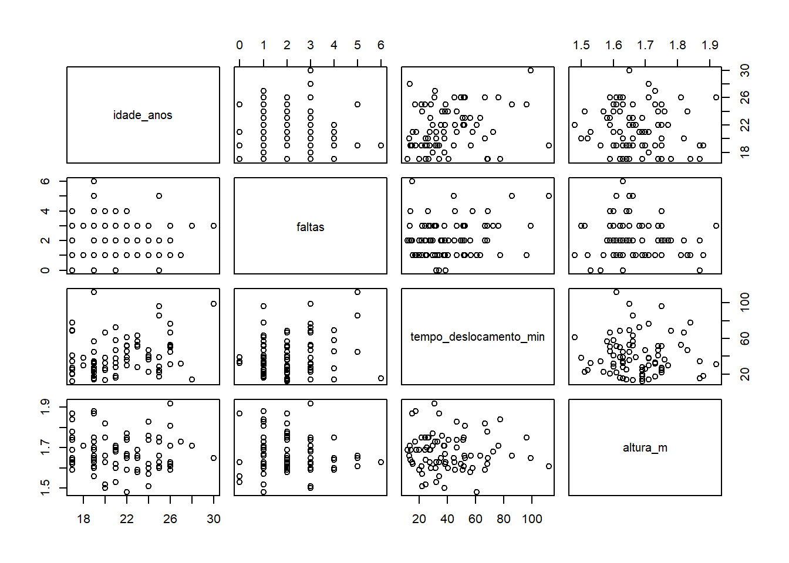
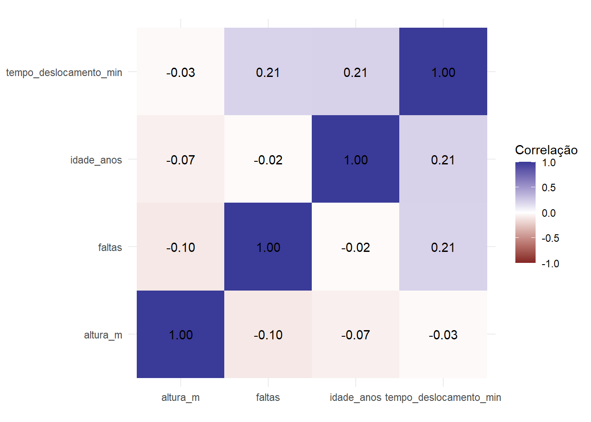
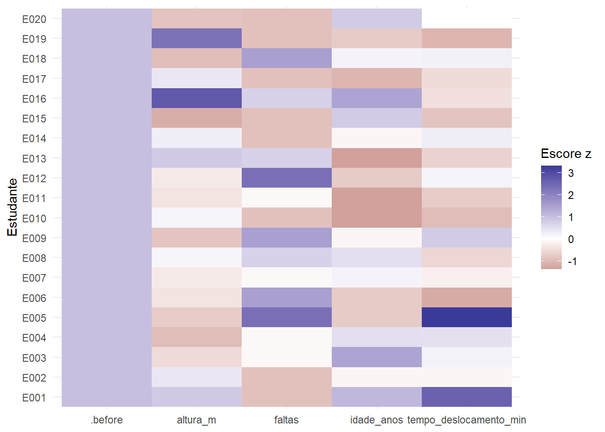
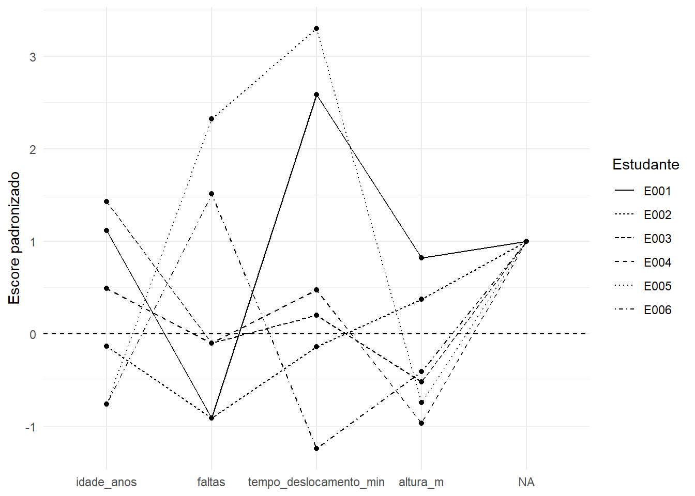
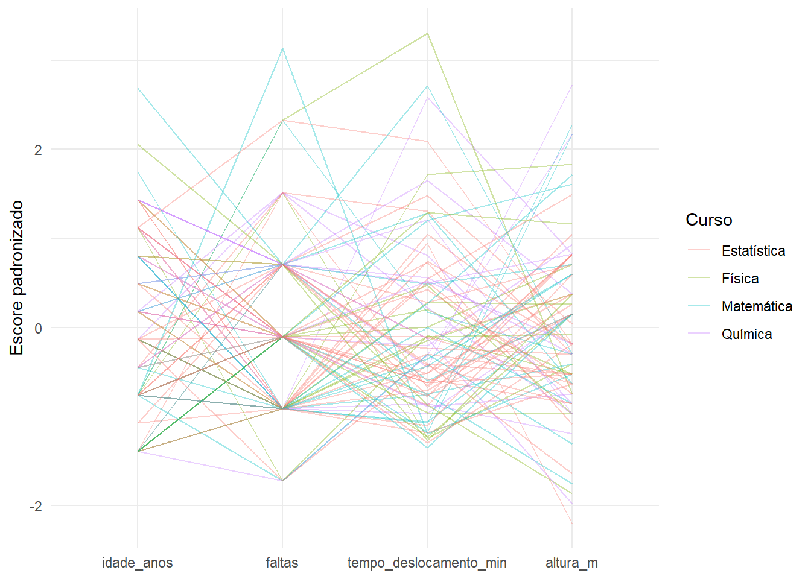
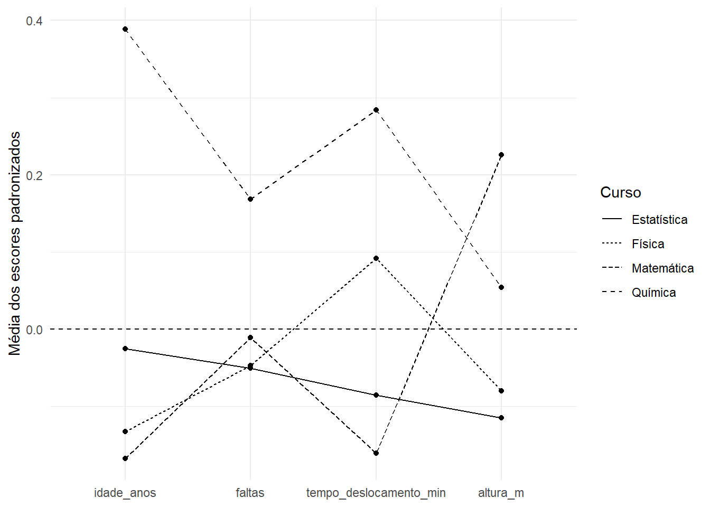

Código
library(tidyverse)
dados <- read_csv(
"dados/estudantes80n.csv",
show_col_types = FALSE
)Nos capítulos anteriores, avançamos gradualmente da análise de uma variável para o estudo de duas variáveis. Investigamos associações entre duas variáveis qualitativas, entre duas variáveis quantitativas e entre uma variável qualitativa e uma quantitativa.
Muitos problemas reais, entretanto, envolvem várias características observadas simultaneamente sobre cada indivíduo.
Em um estudo com estudantes, por exemplo, podemos registrar ao mesmo tempo:
Cada estudante deixa de ser descrito por um único valor ou por um par de valores e passa a ser representado por um conjunto de medidas.
Entramos, assim, no domínio dos dados multivariados.
A questão central passa a ser:
Como organizar, comparar e visualizar várias variáveis observadas simultaneamente nas mesmas unidades estatísticas?
Neste capítulo, estudaremos a estrutura básica dos dados multivariados, a matriz de dados, os vetores de observações, a centralização e a padronização, as matrizes de covariâncias e correlações e a distância entre observações. Na parte computacional, utilizaremos essas ideias para construir matrizes de correlações, matrizes de diagramas de dispersão, mapas de calor, gráficos de perfis e coordenadas paralelas.
Ao final deste capítulo, espera-se que o estudante seja capaz de:
Toda a abordagem permanece exploratória e descritiva. Não utilizaremos testes de hipóteses, valores-\(p\) ou métodos inferenciais.
Na análise bivariada quantitativa, cada indivíduo era representado por um par
\[ (x_i,y_i). \]
Com três variáveis, cada unidade passa a ser descrita por uma tripla:
\[ (x_{i1},x_{i2},x_{i3}). \]
Com \(p\) variáveis, escrevemos
\[ (x_{i1},x_{i2},\ldots,x_{ip}). \]
Esse conjunto ordenado de valores representa o perfil multivariado da unidade \(i\).
Considere quatro estudantes descritos por idade, número de faltas, tempo de deslocamento e altura:
| Estudante | Idade (anos) | Faltas | Tempo (min) | Altura (m) |
|---|---|---|---|---|
| A | 18 | 1 | 20 | 1,60 |
| B | 20 | 3 | 50 | 1,80 |
| C | 23 | 2 | 35 | 1,68 |
| D | 25 | 4 | 70 | 1,72 |
O estudante A não é descrito apenas pela idade ou apenas pelo tempo de deslocamento. Seu perfil é formado simultaneamente pelas quatro medidas:
\[ (18,\;1,\;20,\;1{,}60). \]
O estudante B possui o perfil
\[ (20,\;3,\;50,\;1{,}80). \]
Quando comparamos A e B, portanto, podemos considerar as quatro características simultaneamente.
Uma análise é multivariada quando várias variáveis são consideradas conjuntamente, preservando o fato de que os valores de uma mesma linha pertencem à mesma unidade estatística.
O pareamento das informações continua sendo fundamental.
Quando temos \(n\) unidades estatísticas e \(p\) variáveis quantitativas, podemos organizar os dados em uma matriz
\[ \mathbf{X} = \begin{pmatrix} x_{11} & x_{12} & \cdots & x_{1p}\\ x_{21} & x_{22} & \cdots & x_{2p}\\ \vdots & \vdots & \ddots & \vdots\\ x_{n1} & x_{n2} & \cdots & x_{np} \end{pmatrix}. \]
A matriz possui dimensão
\[ n\times p. \]
Nessa organização:
Para a Tabela 12.1,
\[ \mathbf{X} = \begin{pmatrix} 18 & 1 & 20 & 1{,}60\\ 20 & 3 & 50 & 1{,}80\\ 23 & 2 & 35 & 1{,}68\\ 25 & 4 & 70 & 1{,}72 \end{pmatrix}. \]
Temos
\[ n=4 \]
observações e
\[ p=4 \]
variáveis.
Em um banco real podem existir também identificadores e variáveis qualitativas.
Por exemplo, um data.frame do R pode conter nome, curso, sexo, idade e altura na mesma estrutura.
Entretanto, operações como centralização, matriz de covariâncias, matriz de correlações e distância euclidiana são aplicadas, neste capítulo, ao subconjunto de variáveis quantitativas.
Cada linha da matriz pode ser representada por um vetor.
Para a unidade \(i\),
\[ \mathbf{x}_i = \begin{pmatrix} x_{i1}\\ x_{i2}\\ \vdots\\ x_{ip} \end{pmatrix}. \]
Esse vetor reúne todas as características quantitativas consideradas para aquela unidade.
No exemplo, o vetor do estudante C é
\[ \mathbf{x}_C = \begin{pmatrix} 23\\ 2\\ 35\\ 1{,}68 \end{pmatrix}. \]
Podemos pensar em cada observação como um ponto em um espaço de \(p\) dimensões.
Com duas variáveis, conseguimos desenhar esse ponto em um plano.
Com três variáveis, ainda podemos imaginar um espaço tridimensional.
Com quatro, dez ou cem variáveis, a representação geométrica direta já não é possível, mas a ideia permanece: cada unidade é caracterizada por sua posição em um espaço definido pelas variáveis.
Também podemos reunir as médias das \(p\) variáveis em um vetor:
\[ \bar{\mathbf{x}} = \begin{pmatrix} \bar{x}_1\\ \bar{x}_2\\ \vdots\\ \bar{x}_p \end{pmatrix}. \]
O vetor de médias funciona como um perfil médio do conjunto.
Comparar uma observação com esse vetor ajuda a identificar em quais características ela está acima ou abaixo do padrão médio.
A análise multivariada não consiste em abandonar as análises univariadas ou bivariadas.
Ao contrário, elas continuam úteis.
Podemos:
A diferença é que agora procuramos compreender o conjunto das variáveis como um sistema.
Suponha que dois estudantes tenham o mesmo tempo de deslocamento de 40 minutos.
Em uma análise univariada dessa variável, eles seriam iguais.
Entretanto, seus perfis poderiam ser:
\[ \mathbf{x}_A = (18,\;0,\;40,\;1{,}55) \]
e
\[ \mathbf{x}_B = (27,\;5,\;40,\;1{,}86). \]
Considerando várias características, esses dois estudantes deixam de ser semelhantes.
Uma observação multivariada é definida pelo conjunto de suas características, e não por uma única variável isolada.
Um dos primeiros problemas da análise multivariada aparece quando as variáveis possuem unidades e ordens de grandeza diferentes.
No banco dos estudantes, por exemplo:
Considere novamente:
\[ \text{idade}=22,\qquad \text{faltas}=2,\qquad \text{tempo}=50,\qquad \text{altura}=1{,}70. \]
Os números não podem ser comparados diretamente.
Não faz sentido concluir que o tempo de deslocamento é “maior” ou “mais importante” apenas porque 50 é numericamente maior que 1,70.
As escalas são diferentes.
Considere dois indivíduos:
\[ A=(20,\;1,\;20,\;1{,}60) \]
e
\[ B=(22,\;3,\;50,\;1{,}80). \]
As diferenças são:
\[ (2,\;2,\;30,\;0{,}20). \]
Se utilizarmos diretamente os quadrados dessas diferenças, obtemos:
\[ 4,\quad4,\quad900,\quad0{,}04. \]
A diferença de 30 minutos domina quase completamente o cálculo.
Isso não significa necessariamente que o tempo de deslocamento seja a característica mais importante. Parte desse efeito é consequência de sua escala numérica.
Há ainda um problema adicional: se a altura fosse registrada em centímetros, a diferença de
\[ 0{,}20\text{ m} \]
passaria a ser
\[ 20\text{ cm}. \]
A característica física não mudou, mas seu peso numérico mudaria.
Esse é um forte argumento para considerar a padronização quando variáveis com escalas diferentes são combinadas.
Centralizar uma variável significa subtrair sua média de cada observação.
Para a variável \(j\),
\[ x_{ij}^{(c)} = x_{ij}-\bar{x}_j. \]
Depois da centralização, a média da variável passa a ser zero.
Considere as idades
\[ 18,\;20,\;22,\;24,\;26. \]
A média é
\[ \bar{x}=22. \]
Os valores centralizados são:
\[ 18-22=-4, \]
\[ 20-22=-2, \]
\[ 22-22=0, \]
\[ 24-22=2, \]
\[ 26-22=4. \]
Portanto,
\[ -4,\;-2,\;0,\;2,\;4. \]
A média desses valores é zero.
A centralização muda a origem da escala, mas não altera a dispersão.
Se
\[ X_c=X-\bar{X}, \]
então
\[ s_{X_c}=s_X. \]
As diferenças entre pares de observações também são preservadas:
\[ (x_i-\bar{x})-(x_j-\bar{x}) = x_i-x_j. \]
Consequentemente, centralizar todas as observações não altera as distâncias euclidianas entre elas.
Um valor centralizado:
A unidade original é mantida.
Se cada coluna da matriz de dados for centralizada, obtemos a matriz
\[ \mathbf{X}_c. \]
Cada coluna de \(\mathbf{X}_c\) possui média zero.
Em notação matricial,
\[ \mathbf{X}_c = \mathbf{X} - \mathbf{1}_n\bar{\mathbf{x}}^\top, \]
em que \(\mathbf{1}_n\) é um vetor com \(n\) elementos iguais a 1.
A expressão matricial é compacta, mas a ideia continua simples: subtrair de cada coluna a sua própria média.
A centralização resolve o problema da origem, mas não o problema das diferentes escalas.
Para colocar as variáveis em uma escala comum, podemos utilizar a padronização.
Para a variável \(j\),
\[ z_{ij} = \frac{ x_{ij}-\bar{x}_j }{ s_j }, \]
em que \(s_j\) é o desvio padrão da variável.
O valor padronizado também é chamado de escore padronizado ou escore \(z\).
Depois da padronização amostral, cada variável apresenta:
\[ \bar{z}=0 \]
e
\[ s_z=1. \]
Se
\[ z=1{,}5, \]
a observação está 1,5 desvio padrão acima da média daquela variável.
Se
\[ z=-0{,}8, \]
ela está 0,8 desvio padrão abaixo da média.
Como os escores \(z\) são adimensionais, variáveis originalmente medidas em anos, minutos e metros passam a ser expressas em uma escala comparável.
Considere novamente
\[ 18,\;20,\;22,\;24,\;26. \]
A média é
\[ \bar{x}=22 \]
e o desvio padrão amostral é
\[ s=\sqrt{10}\approx3{,}16. \]
Os valores padronizados são aproximadamente
\[ -1{,}26,\;-0{,}63,\;0,\;0{,}63,\;1{,}26. \]
Agora a unidade “anos” desapareceu.
Para as quatro variáveis quantitativas do banco dos 80 estudantes, as médias são aproximadamente:
| Variável | Média | Desvio padrão |
|---|---|---|
| Idade (anos) | 21,425 | 3,193 |
| Faltas | 2,125 | 1,236 |
| Tempo de deslocamento (min) | 40,761 | 21,569 |
| Altura (m) | 1,6765 | 0,0893 |
Depois da padronização, os cinco primeiros estudantes apresentam aproximadamente:
| Estudante | Idade | Faltas | Tempo | Altura |
|---|---|---|---|---|
| E001 | 1,12 | -0,91 | 2,58 | 0,82 |
| E002 | -0,13 | -0,91 | -0,14 | 0,38 |
| E003 | 1,43 | -0,10 | 0,20 | -0,52 |
| E004 | 0,49 | -0,10 | 0,47 | -0,97 |
| E005 | -0,76 | 2,33 | 3,30 | -0,75 |
A Tabela 12.3 permite comparar características originalmente incomparáveis.
O estudante E005, por exemplo, apresenta:
A padronização transforma o perfil em uma descrição relativa às distribuições de cada variável.
A padronização é especialmente importante quando:
Entretanto, padronizar também modifica a interpretação da escala.
Se todas as variáveis já possuem unidade comparável e as diferenças de variabilidade têm significado substantivo, pode haver razões para trabalhar com os dados originais.
A decisão deve ser coerente com o objetivo da análise.
Com várias variáveis quantitativas, podemos reunir todas as variâncias e covariâncias em uma única matriz.
Para \(p\) variáveis,
\[ \mathbf{S} = \begin{pmatrix} s_1^2 & s_{12} & \cdots & s_{1p}\\ s_{21} & s_2^2 & \cdots & s_{2p}\\ \vdots & \vdots & \ddots & \vdots\\ s_{p1} & s_{p2} & \cdots & s_p^2 \end{pmatrix}. \]
Os elementos da diagonal principal são as variâncias:
\[ s_1^2,\;s_2^2,\ldots,s_p^2. \]
Os elementos fora da diagonal são as covariâncias.
Para duas variáveis \(j\) e \(k\),
\[ s_{jk} = \frac{1}{n-1} \sum_{i=1}^{n} (x_{ij}-\bar{x}_j) (x_{ik}-\bar{x}_k). \]
Como
\[ s_{jk}=s_{kj}, \]
a matriz de covariâncias é simétrica.
Se \(\mathbf{X}_c\) é a matriz de dados centralizados, então
\[ \mathbf{S} = \frac{1}{n-1} \mathbf{X}_c^\top \mathbf{X}_c. \]
Essa expressão mostra uma conexão importante: a matriz de covariâncias é construída a partir dos produtos entre as colunas centralizadas.
Considere três variáveis \(X_1\), \(X_2\) e \(X_3\):
\[ \mathbf{S} = \begin{pmatrix} 25 & 8 & -3\\ 8 & 16 & 2\\ -3 & 2 & 9 \end{pmatrix}. \]
Podemos ler:
\[ s_1^2=25, \qquad s_2^2=16, \qquad s_3^2=9. \]
As covariâncias são:
\[ s_{12}=8, \]
\[ s_{13}=-3, \]
\[ s_{23}=2. \]
Assim:
Entretanto, como estudado anteriormente, a magnitude de uma covariância depende das escalas das variáveis.
Por isso, quando desejamos comparar a intensidade das associações lineares entre diferentes pares, a matriz de correlações costuma ser mais conveniente.
A matriz de correlações reúne as correlações lineares de Pearson entre todos os pares de variáveis quantitativas.
Para \(p\) variáveis,
\[ \mathbf{R} = \begin{pmatrix} 1 & r_{12} & \cdots & r_{1p}\\ r_{21} & 1 & \cdots & r_{2p}\\ \vdots & \vdots & \ddots & \vdots\\ r_{p1} & r_{p2} & \cdots & 1 \end{pmatrix}. \]
A diagonal principal é formada por 1 porque toda variável possui correlação perfeita consigo mesma:
\[ r_{jj}=1. \]
Além disso,
\[ r_{jk}=r_{kj}, \]
de modo que a matriz também é simétrica.
Considere:
\[ \mathbf{R} = \begin{pmatrix} 1 & 0{,}80 & -0{,}20\\ 0{,}80 & 1 & -0{,}10\\ -0{,}20 & -0{,}10 & 1 \end{pmatrix}. \]
A correlação mais intensa é entre as variáveis 1 e 2:
\[ r_{12}=0{,}80. \]
As relações envolvendo a variável 3 são relativamente fracas e negativas.
Uma matriz de correlações é extremamente útil, mas cada célula continua resumindo uma relação bivariada e linear.
Ela pode não revelar:
Por isso, deve ser complementada por gráficos de dispersão.
Existe uma relação elegante entre padronização e correlação.
Se todas as variáveis forem padronizadas, a matriz de covariâncias dos dados padronizados é exatamente a matriz de correlações dos dados originais:
\[ \operatorname{Cov}(\mathbf{Z}) = \mathbf{R}. \]
Isso ocorre porque cada variável padronizada possui variância igual a 1.
Em forma matricial, se
\[ \mathbf{D} = \operatorname{diag}(s_1,s_2,\ldots,s_p), \]
então
\[ \mathbf{R} = \mathbf{D}^{-1} \mathbf{S} \mathbf{D}^{-1}. \]
A expressão apenas formaliza a ideia de dividir cada covariância pelos respectivos desvios padrão.
Em uma análise multivariada, frequentemente queremos medir quão semelhantes ou diferentes são duas unidades considerando várias características simultaneamente.
Uma maneira de fazer isso é calcular uma distância.
A distância euclidiana entre as observações \(i\) e \(j\) é
\[ d_{ij} = \sqrt{ \sum_{k=1}^{p} (x_{ik}-x_{jk})^2 }. \]
Ela generaliza o conhecido teorema de Pitágoras para várias dimensões.
Considere
\[ A=(2,3) \]
e
\[ B=(5,7). \]
A distância é
\[ d(A,B) = \sqrt{ (2-5)^2+(3-7)^2 } \]
\[ = \sqrt{ 9+16 } = 5. \]
Com duas variáveis, essa é exatamente a distância entre dois pontos no plano.
Considere novamente:
\[ A=(20,\;1,\;20,\;1{,}60) \]
e
\[ B=(22,\;3,\;50,\;1{,}80). \]
A distância nos dados originais seria
\[ d(A,B) = \sqrt{ (20-22)^2+ (1-3)^2+ (20-50)^2+ (1{,}60-1{,}80)^2 }. \]
Logo,
\[ d(A,B) = \sqrt{ 4+4+900+0{,}04 } \approx 30{,}13. \]
Observe que o termo relativo ao tempo de deslocamento,
\[ 900, \]
domina o cálculo.
Isso acontece, em grande parte, porque minutos estão em uma escala numericamente maior que metros.
Quando as variáveis possuem unidades e escalas diferentes, é comum calcular a distância usando os escores padronizados:
\[ d_{ij}^{(z)} = \sqrt{ \sum_{k=1}^{p} (z_{ik}-z_{jk})^2 }. \]
Agora cada diferença está expressa em unidades de desvio padrão.
No banco dos estudantes, por exemplo, a distância padronizada entre E001 e E002, considerando idade, faltas, tempo de deslocamento e altura, é aproximadamente
\[ 3{,}03. \]
Esse número não está em anos, minutos ou metros. Ele representa uma distância no espaço das variáveis padronizadas.
Uma distância pequena indica que as duas observações possuem perfis multivariados semelhantes nas variáveis utilizadas.
Uma distância grande indica maior diferença global entre os perfis.
Não existe uma distância entre dois indivíduos independente do contexto.
A distância muda quando:
Portanto, a interpretação sempre deve mencionar quais variáveis participaram do cálculo.
A distância euclidiana é útil, mas exige atenção.
Primeiro, variáveis em escalas muito diferentes podem dominar o resultado se os dados não forem padronizados.
Segundo, se várias variáveis muito correlacionadas representam praticamente a mesma característica, essa dimensão pode receber peso excessivo por aparecer repetidamente.
Terceiro, valores extremos podem aumentar bastante as distâncias.
Finalmente, observações com dados ausentes exigem tratamento cuidadoso, pois duas distâncias calculadas com conjuntos diferentes de variáveis podem deixar de ser diretamente comparáveis.
Com duas variáveis, o diagrama de dispersão oferece uma representação natural.
Com muitas variáveis, precisamos combinar diferentes estratégias.
Algumas das mais úteis para exploração inicial são:
Nenhuma representação mostra tudo. Cada uma enfatiza uma parte da estrutura multivariada.
Uma matriz de diagramas de dispersão apresenta, simultaneamente, gráficos para vários pares de variáveis.
Ela permite observar:
Apesar do nome “matriz”, cada painel continua mostrando apenas duas variáveis por vez. A vantagem é reunir muitos pares em uma única visualização.
Um mapa de calor representa valores numericamente por meio da intensidade ou tonalidade de células de uma grade.
Pode ser utilizado, por exemplo, para:
Em uma matriz de correlações, o mapa facilita a identificação de blocos de variáveis mais fortemente relacionadas.
Em uma matriz de valores padronizados, ajuda a identificar perfis com valores sistematicamente altos ou baixos.
Em um gráfico de perfis, cada observação é representada por uma linha que conecta seus valores em várias variáveis.
Como as unidades podem ser diferentes, normalmente utilizamos valores padronizados.
O gráfico é especialmente útil quando queremos comparar poucas observações ou perfis médios de alguns grupos.
As coordenadas paralelas seguem ideia semelhante, mas são frequentemente utilizadas para observar simultaneamente muitos perfis.
Cada variável ocupa um eixo paralelo, e cada observação é representada por uma linha atravessando esses eixos.
Em conjuntos maiores, pode ocorrer sobreposição de muitas linhas. Nesse caso, transparência, seleção de subconjuntos ou identificação por grupos pode facilitar a leitura.
Adicionar mais variáveis nem sempre produz mais informação visível.
Gráficos multivariados podem ficar congestionados quando há:
Uma boa análise multivariada combina diferentes representações em vez de tentar mostrar tudo em um único gráfico.
Antes de aplicar métodos mais avançados, uma exploração multivariada pode seguir este percurso:
A análise multivariada não elimina o que foi aprendido anteriormente; ela organiza essas ideias para estudar várias características conjuntamente.
Nesta aula prática, utilizaremos as quatro variáveis quantitativas do banco dos 80 estudantes:
idade_anos;faltas;tempo_deslocamento_min;altura_m.library(tidyverse)
dados <- read_csv(
"dados/estudantes80n.csv",
show_col_types = FALSE
)Selecione as variáveis quantitativas:
dados_quantitativos <- dados |>
select(
idade_anos,
faltas,
tempo_deslocamento_min,
altura_m
)Verifique a estrutura:
glimpse(
dados_quantitativos
)Rows: 80
Columns: 4
$ idade_anos <dbl> 25, 21, 26, 23, 19, 19, 22, 23, 21, 17, 17, 19,…
$ faltas <dbl> 1, 1, 2, 2, 5, 4, 2, 3, 4, 1, 2, 5, 3, 1, 1, 3,…
$ tempo_deslocamento_min <dbl> 96.5, 37.7, 45.1, 51.0, 112.0, 14.0, 35.7, 27.9…
$ altura_m <dbl> 1.75, 1.71, 1.63, 1.59, 1.61, 1.64, 1.65, 1.69,…O banco possui 80 estudantes e quatro variáveis quantitativas. fileciteturn33file0
Um data.frame pode ser convertido em matriz por:
matriz_x <- as.matrix(
dados_quantitativos
)
dim(
matriz_x
)[1] 80 4O resultado esperado é
80 4isto é,
\[ n=80 \qquad\text{e}\qquad p=4. \]
Observe algumas linhas:
matriz_x[
1:5,
] idade_anos faltas tempo_deslocamento_min altura_m
[1,] 25 1 96.5 1.75
[2,] 21 1 37.7 1.71
[3,] 26 2 45.1 1.63
[4,] 23 2 51.0 1.59
[5,] 19 5 112.0 1.61Cada linha corresponde a um estudante e cada coluna a uma variável.
O perfil quantitativo do primeiro estudante é:
matriz_x[
1,
] idade_anos faltas tempo_deslocamento_min
25.00 1.00 96.50
altura_m
1.75 Para preservar a identificação:
dados |>
select(
id_estudante,
idade_anos,
faltas,
tempo_deslocamento_min,
altura_m
) |>
slice(
1
)# A tibble: 1 × 5
id_estudante idade_anos faltas tempo_deslocamento_min altura_m
<chr> <dbl> <dbl> <dbl> <dbl>
1 E001 25 1 96.5 1.75Assim, o identificador continua disponível, embora não participe diretamente das operações numéricas.
colMeans(
dados_quantitativos
) idade_anos faltas tempo_deslocamento_min
21.42500 2.12500 40.76125
altura_m
1.67650 Também podemos obter os desvios padrão:
sapply(
dados_quantitativos,
sd
) idade_anos faltas tempo_deslocamento_min
3.19324842 1.23631752 21.56948439
altura_m
0.08925997 Esses dois vetores descrevem, respectivamente, a posição média e a escala de cada variável.
A função scale() permite centralizar sem padronizar:
dados_centralizados <- scale(
dados_quantitativos,
center = TRUE,
scale = FALSE
)
dados_centralizados |>
head() idade_anos faltas tempo_deslocamento_min altura_m
[1,] 3.575 -1.125 55.73875 0.0735
[2,] -0.425 -1.125 -3.06125 0.0335
[3,] 4.575 -0.125 4.33875 -0.0465
[4,] 1.575 -0.125 10.23875 -0.0865
[5,] -2.425 2.875 71.23875 -0.0665
[6,] -2.425 1.875 -26.76125 -0.0365Verifique as médias:
colMeans(
dados_centralizados
) idade_anos faltas tempo_deslocamento_min
-7.105427e-16 0.000000e+00 3.330669e-15
altura_m
-1.082467e-16 Devido a arredondamentos numéricos, podem aparecer valores extremamente pequenos, como
2e-16em vez de zero exato.
Isso é apenas efeito da representação computacional dos números.
Verifique também que os desvios padrão permanecem os mesmos:
apply(
dados_centralizados,
2,
sd
) idade_anos faltas tempo_deslocamento_min
3.19324842 1.23631752 21.56948439
altura_m
0.08925997 Para centralizar e dividir pelo desvio padrão:
dados_padronizados <- scale(
dados_quantitativos
)Observe as primeiras linhas:
dados_padronizados |>
head() idade_anos faltas tempo_deslocamento_min altura_m
[1,] 1.1195496 -0.9099604 2.5841485 0.8234375
[2,] -0.1330933 -0.9099604 -0.1419250 0.3753082
[3,] 1.4327103 -0.1011067 0.2011522 -0.5209502
[4,] 0.4932281 -0.1011067 0.4746868 -0.9690794
[5,] -0.7594148 2.3254544 3.3027563 -0.7450148
[6,] -0.7594148 1.5166007 -1.2406996 -0.4089179Verifique as médias:
colMeans(
dados_padronizados
) idade_anos faltas tempo_deslocamento_min
-2.317591e-16 -5.551115e-18 1.404801e-16
altura_m
-1.213699e-15 E os desvios padrão:
apply(
dados_padronizados,
2,
sd
) idade_anos faltas tempo_deslocamento_min
1 1 1
altura_m
1 Devemos obter médias aproximadamente iguais a zero e desvios padrão iguais a 1.
Uma matriz padronizada pode ser convertida novamente para data.frame:
dados_z <- dados_padronizados |>
as.data.frame() |>
bind_cols(
id_estudante =
dados$id_estudante,
.before = 1
)
dados_z |>
slice_head(
n = 5
) idade_anos faltas tempo_deslocamento_min altura_m id_estudante .before
1 1.1195496 -0.9099604 2.5841485 0.8234375 E001 1
2 -0.1330933 -0.9099604 -0.1419250 0.3753082 E002 1
3 1.4327103 -0.1011067 0.2011522 -0.5209502 E003 1
4 0.4932281 -0.1011067 0.4746868 -0.9690794 E004 1
5 -0.7594148 2.3254544 3.3027563 -0.7450148 E005 1Agora podemos interpretar os perfis relativos de estudantes específicos.
Por exemplo:
dados_z |>
filter(
id_estudante %in%
c(
"E001",
"E002",
"E003",
"E004",
"E005"
)
) idade_anos faltas tempo_deslocamento_min altura_m id_estudante .before
1 1.1195496 -0.9099604 2.5841485 0.8234375 E001 1
2 -0.1330933 -0.9099604 -0.1419250 0.3753082 E002 1
3 1.4327103 -0.1011067 0.2011522 -0.5209502 E003 1
4 0.4932281 -0.1011067 0.4746868 -0.9690794 E004 1
5 -0.7594148 2.3254544 3.3027563 -0.7450148 E005 1No R:
matriz_cov <- cov(
dados_quantitativos
)
matriz_cov idade_anos faltas tempo_deslocamento_min
idade_anos 10.19683544 -0.09177215 14.78376582
faltas -0.09177215 1.52848101 5.55553797
tempo_deslocamento_min 14.78376582 5.55553797 465.24265665
altura_m -0.01988608 -0.01120253 -0.05092215
altura_m
idade_anos -0.019886076
faltas -0.011202532
tempo_deslocamento_min -0.050922152
altura_m 0.007967342Para facilitar a leitura:
round(
matriz_cov,
3
) idade_anos faltas tempo_deslocamento_min altura_m
idade_anos 10.197 -0.092 14.784 -0.020
faltas -0.092 1.528 5.556 -0.011
tempo_deslocamento_min 14.784 5.556 465.243 -0.051
altura_m -0.020 -0.011 -0.051 0.008A matriz obtida é aproximadamente:
| Idade | Faltas | Tempo | Altura | |
|---|---|---|---|---|
| Idade | 10,197 | -0,092 | 14,784 | -0,020 |
| Faltas | -0,092 | 1,528 | 5,556 | -0,011 |
| Tempo | 14,784 | 5,556 | 465,243 | -0,051 |
| Altura | -0,020 | -0,011 | -0,051 | 0,008 |
Observe a diagonal da Tabela 12.4:
\[ 10{,}197,\quad 1{,}528,\quad 465{,}243,\quad 0{,}008. \]
Esses valores são as variâncias das quatro variáveis.
Os demais elementos são covariâncias.
As diferenças muito grandes de magnitude refletem também as diferentes unidades e escalas.
Podemos reconstruir a matriz de covariâncias a partir da matriz centralizada:
xc <- scale(
dados_quantitativos,
center = TRUE,
scale = FALSE
)
cov_manual <-
t(xc) %*%
xc /
(
nrow(xc) - 1
)
round(
cov_manual,
3
) idade_anos faltas tempo_deslocamento_min altura_m
idade_anos 10.197 -0.092 14.784 -0.020
faltas -0.092 1.528 5.556 -0.011
tempo_deslocamento_min 14.784 5.556 465.243 -0.051
altura_m -0.020 -0.011 -0.051 0.008O resultado coincide com cov(dados_quantitativos).
matriz_cor <- cor(
dados_quantitativos
)
round(
matriz_cor,
3
) idade_anos faltas tempo_deslocamento_min altura_m
idade_anos 1.000 -0.023 0.215 -0.070
faltas -0.023 1.000 0.208 -0.102
tempo_deslocamento_min 0.215 0.208 1.000 -0.026
altura_m -0.070 -0.102 -0.026 1.000A matriz é aproximadamente:
| Idade | Faltas | Tempo | Altura | |
|---|---|---|---|---|
| Idade | 1,000 | -0,023 | 0,215 | -0,070 |
| Faltas | -0,023 | 1,000 | 0,208 | -0,102 |
| Tempo | 0,215 | 0,208 | 1,000 | -0,026 |
| Altura | -0,070 | -0,102 | -0,026 | 1,000 |
A Tabela 12.5 mostra que, nesse conjunto, nenhuma das correlações lineares entre as quatro variáveis é intensa.
As maiores em módulo são as relações de:
Mesmo assim, ambas estão pouco acima de
\[ 0{,}20. \]
Esse resumo deve ser complementado pelos diagramas de dispersão.
Verifique:
cov_z <- cov(
dados_padronizados
)
round(
cov_z,
6
) idade_anos faltas tempo_deslocamento_min altura_m
idade_anos 1.000000 -0.023246 0.214641 -0.069769
faltas -0.023246 1.000000 0.208332 -0.101515
tempo_deslocamento_min 0.214641 0.208332 1.000000 -0.026449
altura_m -0.069769 -0.101515 -0.026449 1.000000Compare com:
round(
matriz_cor,
6
) idade_anos faltas tempo_deslocamento_min altura_m
idade_anos 1.000000 -0.023246 0.214641 -0.069769
faltas -0.023246 1.000000 0.208332 -0.101515
tempo_deslocamento_min 0.214641 0.208332 1.000000 -0.026449
altura_m -0.069769 -0.101515 -0.026449 1.000000Os resultados coincidem, exceto por possíveis diferenças numéricas extremamente pequenas de arredondamento.
O R base possui uma ferramenta simples e muito útil:
pairs(
dados_quantitativos
)
A Figura 12.1 permite examinar todos os pares simultaneamente.
Não procure apenas linhas retas. Observe também:
Primeiro transformaremos a matriz em formato longo:
cor_long <- matriz_cor |>
as.data.frame() |>
rownames_to_column(
"variavel_linha"
) |>
pivot_longer(
cols = -variavel_linha,
names_to = "variavel_coluna",
values_to = "correlacao"
)Agora construímos o mapa de calor:
ggplot(
cor_long,
aes(
x = variavel_coluna,
y = variavel_linha,
fill = correlacao
)
) +
geom_tile() +
geom_text(
aes(
label = sprintf(
"%.2f",
correlacao
)
)
) +
scale_fill_gradient2(
limits = c(-1, 1),
midpoint = 0
) +
labs(
x = NULL,
y = NULL,
fill = "Correlação"
) +
coord_equal() +
theme_minimal()
O mapa da Figura 12.2 facilita a localização visual de correlações positivas e negativas.
Entretanto, ele não substitui os diagramas de dispersão.
Também podemos visualizar perfis individuais.
Selecionaremos os 20 primeiros estudantes:
dados_z_long <- dados_z |>
slice_head(
n = 20
) |>
pivot_longer(
cols = -id_estudante,
names_to = "variavel",
values_to = "z"
)Construa o mapa:
ggplot(
dados_z_long,
aes(
x = variavel,
y = id_estudante,
fill = z
)
) +
geom_tile() +
scale_fill_gradient2(
midpoint = 0
) +
labs(
x = NULL,
y = "Estudante",
fill = "Escore z"
) +
theme_minimal()
Na Figura 12.3:
O objetivo não é classificar os estudantes, mas reconhecer perfis e contrastes.
A distância euclidiana pode ser calculada com dist():
distancias_originais <- dist(
dados_quantitativos
)
distancias_originais 1 2 3 4 5 6
2 58.9359110
3 51.4195916 8.9870129
4 45.5551929 13.4871939 6.6190332
5 17.0958942 74.4345350 67.3320904 61.2045783
6 82.7723511 23.9727950 31.9407279 37.2693238 98.0051065
7 60.8822634 2.4502245 10.2156938 15.3327623 76.4178749 21.9975021
8 68.6583105 10.2000196 17.4883847 23.1218511 84.2188601 14.4987068
9 38.6252832 20.7186414 14.1637177 7.7356383 53.8464493 44.2452438
10 76.9171866 18.1463605 26.6835830 31.5912963 92.1086663 7.0001786
11 72.2513121 13.6383613 22.2970873 26.9757762 87.3744293 11.0675200
12 52.4977142 8.1390171 7.6393979 8.2008292 67.5000119 30.5163907
13 70.2854181 11.8744095 20.5079107 25.0502615 85.3469953 12.8958172
14 49.8607310 9.1000055 5.3753977 4.7594222 65.3532562 32.9976302
15 74.2069565 15.6901115 22.9094653 28.7348290 89.9282581 10.1437123
16 65.4384360 8.5208040 14.0386645 20.1523919 81.2274960 18.5064421
17 67.0663224 8.4504438 17.2944037 21.8049169 82.3034021 16.1135006
18 51.1764164 8.4175056 4.4901670 5.9371710 66.5751485 31.6425742
19 79.1279148 20.1999728 28.3956423 33.6547783 94.4850935 4.6922916
20 55.8091614 4.2440664 4.9356762 10.3966389 71.5869408 27.3293176
21 82.4247754 23.5066033 31.5854967 36.9174755 97.7460813 2.0229928
22 24.2166245 35.0571091 28.0671071 21.8150888 39.4017119 58.7425876
23 78.7017382 19.8000101 27.6738794 33.1755934 94.2062440 5.3115440
24 58.8520314 3.6276714 10.6773780 13.8717122 73.9338894 24.1415596
25 57.9777233 1.3459569 7.6975061 12.4806410 73.5701271 24.9631909
26 57.9174145 3.2890880 6.8007426 12.4402934 73.6312440 25.1825416
27 45.0445335 14.0787642 7.6983375 1.5445388 60.5076822 37.7329047
28 72.0740099 13.1394863 21.3836877 26.5888116 87.4972462 11.0622963
29 81.8734658 23.3301607 31.1610334 36.4417563 97.0051566 2.2360903
30 81.4276022 22.5118991 30.6120499 35.9244819 96.7468739 2.3964349
31 28.8923865 31.5981582 25.5233305 18.9845621 43.1579842 54.9364187
32 60.2166098 3.4586847 9.0253476 14.7349550 75.9243867 22.9413252
33 76.8243815 18.0769024 26.5706906 31.4771346 91.9707040 6.7240241
34 62.8196180 5.4106931 14.2782212 17.9532281 77.9865860 20.6904060
35 56.1814925 5.2192816 9.9323764 11.7487233 71.1914805 27.0484750
36 49.7502774 9.7883042 2.8110674 4.4342418 65.4221438 33.1941260
37 71.2530877 12.3628516 20.8366240 25.8314169 86.5924829 11.8850158
38 20.3234249 38.9738374 31.2161240 25.4971449 36.4348734 62.7000391
39 66.9746997 8.2227489 16.0084228 21.4241079 82.5093061 16.0117738
40 45.3435784 13.7826304 7.4466167 1.4534442 60.8071287 37.4339418
41 29.1893285 31.1231120 25.0910362 18.5270316 43.5918582 54.5458559
42 64.7245270 6.1234304 14.4433376 19.2614018 80.0312464 18.0554729
43 40.0628119 18.9329580 11.7882357 5.5000091 55.7247782 42.7346885
44 74.5339359 16.1099348 23.2082830 29.0345725 90.1610226 9.4877236
45 11.3299647 48.5308407 40.9223765 35.0858219 26.7808234 72.1568458
46 29.7844859 29.5943305 21.7230661 16.1133485 45.7825338 53.2714041
47 57.7087896 4.2680675 6.6850580 12.5236416 73.6154902 25.8271195
48 74.8475785 15.9574935 24.2333324 29.3740634 90.1500394 8.1499755
49 40.1509415 19.2044917 13.6708047 7.1165230 55.3447604 42.9050160
50 69.1231047 10.2489219 18.2965461 23.5851648 84.5769259 13.7932048
51 62.4970087 4.0721616 13.0247802 17.2884615 77.8607250 20.6904906
52 62.7124740 5.2503714 14.0939703 17.7733396 77.8285963 20.6177133
53 70.4417490 11.8305368 19.8356850 24.9622835 85.7117822 12.3410737
54 6.0249481 62.1872463 54.2568926 48.7159481 16.9953405 85.9129798
55 74.9068061 16.6198676 23.5212755 29.4679555 90.6485521 9.8874112
56 35.5279172 23.4224871 16.5233925 10.1991225 51.1451552 47.2909674
57 68.2074959 10.2650913 16.8297623 22.7879376 83.9683875 15.6362272
58 44.0114031 15.6220997 7.4694310 3.5069075 60.0440672 39.2463871
59 44.8113780 14.8664051 6.6753577 3.2388887 60.8365844 38.4615509
60 58.6482949 2.2812497 9.2745296 13.2822476 73.9339036 24.1418641
61 65.2076108 6.7247379 15.2397802 19.8333078 80.4248724 17.6284316
62 43.7915517 15.3627341 8.3240855 2.0600000 59.3686921 39.0184585
63 72.4069057 14.2113194 21.0241385 26.9747215 88.1557122 11.9173025
64 44.6123088 14.3698469 7.9756442 1.4159449 60.1498337 38.1706746
65 33.2603082 25.6780548 18.4727069 12.3407820 49.0274668 49.5529051
66 30.2331755 29.0346707 22.4186552 15.9857092 45.4107267 52.7477241
67 83.1781919 25.3671047 31.7788672 37.9443593 99.0301469 9.0755110
68 81.1986878 22.3001816 30.1345333 35.6701682 96.7034648 3.8678676
69 64.6320230 5.7898532 14.1640390 19.2094664 80.1810851 18.5475632
70 46.6216355 13.2230140 4.8000104 3.1954499 62.5652467 36.6307303
71 20.3395698 40.2992171 33.9313144 27.4827673 34.4919251 63.9021126
72 29.0415375 31.1739459 25.1649061 18.5955936 43.5498439 54.6733902
73 63.5837275 4.9244695 13.8426876 18.2718253 78.9015488 19.4331701
74 72.3768858 13.5974409 21.8744966 26.9178380 87.6228646 10.4480859
75 65.1307178 8.7000230 13.7731623 20.0294683 81.0948482 19.3847388
76 85.1824137 26.3249008 34.5913804 39.7555028 100.3648165 3.6458881
77 49.9100831 9.3927845 2.7000000 4.6279153 65.7130763 33.1179121
78 69.2677010 10.4425284 18.9409609 23.8380284 84.5532400 13.6473477
79 83.7554064 24.8403402 32.7542501 38.2179918 99.1504539 2.4920674
80 79.4000025 20.9847659 28.0358699 33.9739547 95.1736539 7.3904059
7 8 9 10 11 12
2
3
4
5
6
7
8 7.9272694
9 22.6108934 30.3825295
10 16.5073196 10.1197826 38.5259406
11 12.0830501 6.8733180 33.7972129 4.8054656
12 9.7693398 17.1919051 13.8813724 24.9048509 20.1256081
13 10.3445638 6.1191176 31.7690494 6.9923959 2.2387720 18.0235956
14 11.1898391 19.1104710 11.7885538 27.0968651 22.4814057 5.0291649
15 13.5855217 6.0311193 36.1498396 7.3691519 7.4675900 23.1051163
16 6.1832758 4.3923684 27.5773893 14.4313166 11.0922676 15.2523080
17 7.1981664 5.7105516 28.7153635 9.8509086 5.2929104 15.2674032
18 10.0021798 17.6570099 12.7393132 26.1583639 21.4858674 3.3171675
19 18.3756061 11.2305877 40.7607458 3.1298722 7.4476573 27.1967443
20 5.4774538 12.9941564 18.0069431 21.8517299 17.4929014 7.4459721
21 21.6092943 14.2112631 43.9911139 6.1229078 10.5906799 30.3486672
22 37.0270293 44.8446218 14.5346620 52.8894139 48.1767745 28.3415049
23 17.8561362 10.3923048 40.4116085 4.5177428 7.9525153 26.9733498
24 4.7711215 11.3595951 20.3475330 18.2376095 13.4746020 6.7796460
25 3.0676375 10.9311665 19.8535866 19.2603323 14.8057725 7.7337184
26 3.5229107 10.7932803 19.9288836 19.8988668 15.5631102 8.2952336
27 15.9317293 23.7211635 6.7514813 32.0556329 27.3792275 7.9636675
28 11.3237317 4.8906952 33.7485763 5.4944426 3.1661333 20.3230633
29 21.2953140 13.8352304 43.2925040 7.3487142 10.6812967 29.5169511
30 20.6205820 13.2586726 42.9939868 5.2079171 9.6131629 29.3545295
31 33.6339115 41.4487829 11.4233314 48.9919544 44.2452269 24.5022448
32 2.0909567 8.5185034 22.1953959 17.7678052 13.5489631 10.0624102
33 16.3818070 9.8919159 38.3615706 1.0099505 4.6002717 24.6650279
34 5.5944973 9.2044772 24.6591342 14.2363057 9.7109680 11.6249043
35 7.2144369 14.3527872 17.8692361 20.9239695 16.2003086 5.0958905
36 11.3233431 18.9265026 11.8312975 27.7712531 23.2038790 5.8564580
37 10.6790683 5.0754409 32.8983282 5.8523585 2.3756262 19.4165522
38 40.8088667 48.4928902 18.8048425 57.0498940 52.3885951 32.6227467
39 6.1011802 2.2127811 28.6877831 10.8704370 7.0019212 15.4927209
40 15.6322775 23.4214111 7.0448279 31.7599197 27.0844974 7.6972787
41 33.1939889 41.0410149 11.0946113 48.5412701 43.8114186 24.1661106
42 4.3232395 5.0807086 26.2381573 12.5301077 7.9555075 12.6984408
43 20.8241422 28.6176886 3.3000606 37.0035417 32.3611434 13.0001885
44 13.8819883 5.9868523 36.3379705 7.5519799 7.5701321 23.1358942
45 50.3789649 58.0689323 28.0052424 66.5042172 61.7935304 41.8325244
46 31.3721788 39.0156379 9.9980048 47.6995807 43.0628901 23.4583375
47 4.7550394 11.4810104 20.2079415 20.4558940 16.3343228 9.6690434
48 14.1226768 7.2803571 36.4103351 2.9348935 3.4426879 22.7984649
49 21.3356533 29.2439891 3.8682813 36.8543200 32.1777936 12.9340674
50 8.2608474 2.2715633 30.7652092 8.5586214 4.8828782 17.3781932
51 3.8688629 8.1226166 24.3148432 14.4743532 10.0083165 11.3599340
52 5.2877594 8.9979776 24.4174302 14.3001259 9.6519480 11.1373426
53 9.8168223 3.5445169 31.9160226 7.5956303 3.9461500 18.2551363
54 64.0097649 71.6428056 41.9881233 80.2847532 75.6323350 55.8309054
55 14.4156720 6.6855366 36.8722131 8.2198783 8.5796795 23.8623469
56 25.4202459 33.2758787 4.2923653 41.4035518 36.7557560 17.3374998
57 7.9851425 2.2733456 30.2325983 11.5714347 8.7727761 17.5340383
58 17.2992948 24.8631132 8.1568438 33.7233510 29.2381412 11.3589436
59 16.5227601 24.0716929 8.7321303 32.9529422 28.4780775 10.8093293
60 3.2836717 10.6337247 20.1499380 18.4566004 13.7687908 6.7810397
61 5.1780788 5.4495963 26.6938195 11.9401884 7.2533854 13.0542139
62 17.1583799 24.9000321 5.8448695 33.4042153 28.7508278 9.4281493
63 11.9820699 4.4094898 34.3923320 9.0450871 8.0232225 21.4748690
64 16.3000031 24.1414768 6.5911759 32.4037174 27.7541060 8.6168498
65 27.6362099 35.4564649 6.2460868 43.7137381 39.0763407 19.6326285
66 31.0649143 38.9288697 8.7919509 46.8071245 42.1073913 22.4247386
67 23.1147918 15.3378747 45.3547362 12.9830813 15.8017372 32.4378421
68 20.3492236 12.8161968 42.9050160 6.0963022 10.1730231 29.4416525
69 4.3248584 5.4621974 26.5036771 12.6895863 8.5616646 13.6111866
70 14.7526574 22.2262210 9.8939578 31.2412372 26.7589312 9.3360002
71 42.4080900 50.2994284 20.2291275 57.8001946 53.1097919 33.5994955
72 33.2780243 41.1521336 11.3222083 48.6103703 43.9002232 24.3685638
73 4.0319226 6.9348107 25.2589964 13.3507153 8.7896587 11.9873433
74 11.7342064 5.3150729 33.8740033 5.2306787 2.2566568 20.1992970
75 6.6705622 5.6790492 27.6271044 15.1644848 12.0788286 15.8624210
76 24.5153340 17.3043347 46.7146455 8.3600239 13.0000962 32.9975999
77 11.1284500 18.8337357 12.3536594 27.5059921 23.0140414 6.7410978
78 8.7315749 4.1428975 30.8300324 7.8264679 3.4409446 17.2626881
79 22.8875534 15.3297391 45.3551937 7.7724449 12.1754014 31.7578353
80 18.8670718 11.1643002 41.4032233 8.5095006 11.0800767 28.3331325
13 14 15 16 17 18
2
3
4
5
6
7
8
9
10
11
12
13
14 20.5915638
15 8.5083723 24.6833324
16 10.0194261 16.5993494 9.2500000
17 3.8225123 17.2626794 9.6057066 8.3506946
18 19.4798768 3.4208332 23.4785093 14.9822862 16.4773906
19 9.5303148 29.2689665 6.8692139 15.3379138 12.2420954 28.2222271
20 15.7804468 6.7985293 18.4000245 10.0131114 12.4427529 6.0033407
21 12.6001429 32.5768338 9.4875919 18.2289029 15.5643953 31.4078016
22 46.1736386 25.9771130 50.5289234 41.9000907 43.0512590 27.2368886
23 9.8713525 28.9000017 5.3267626 14.2580819 12.2723429 27.7807487
24 11.4438455 9.4175421 17.0193889 10.6322199 8.5375641 8.4719773
25 13.0620213 8.2608050 16.4225455 8.7357026 9.6665195 7.5243870
26 13.8429368 8.7889931 16.3307226 7.8319857 10.6980419 7.4572716
27 25.3970471 5.2955170 29.4367525 20.8872904 22.2540244 6.1834942
28 4.1788635 22.2232401 4.6143797 9.0779954 5.5745942 21.2088401
29 12.2435452 32.2528278 10.1633459 17.8127511 15.6539580 30.7124014
30 11.6178483 31.5797229 8.6654486 17.3101849 14.5696808 30.4157591
31 42.2119651 22.6586076 47.2182846 38.8704631 39.2277147 23.9283012
32 11.9230910 10.9660202 14.0369548 5.6626496 8.9023873 9.6264687
33 6.6772449 27.0167004 7.4054304 14.2516280 9.8032852 25.9645913
34 8.0786385 13.2585406 13.8455769 9.9806062 4.6244567 12.9910893
35 14.2351712 7.1980275 19.8994698 13.3443771 11.1897676 7.0839608
36 21.2840339 3.6057731 24.5820849 15.8278994 18.1383820 2.5908493
37 3.0728651 21.3936907 5.9377521 9.1874044 4.4147593 20.4453442
38 50.4099355 29.9874991 54.0742046 45.2004878 47.2255228 31.0749803
39 5.8660378 17.2581836 7.6374079 4.3900456 4.1283895 16.0263034
40 25.1029899 5.0250970 29.1381005 20.5930182 21.9602117 5.8874867
41 41.8002022 22.1561820 46.7701026 38.4688185 38.7646501 23.5584571
42 6.0913381 14.9681295 10.6814606 6.0740514 3.5841875 13.6839906
43 30.4149453 9.9551193 34.2292287 25.5983515 27.1828420 11.2249766
44 8.4349037 25.0614465 2.0232647 9.3262050 10.0439036 23.6062788
45 59.7716329 39.5071082 63.7335712 54.8462177 56.6763840 40.5236338
46 41.0978783 20.7126073 44.5898015 35.7015252 37.9079728 21.6953912
47 14.8129808 9.0002722 16.5606039 8.3291116 11.4458027 8.3601196
48 5.2952809 25.0002500 5.1178511 11.6046930 8.0256838 23.8743712
49 30.2327323 10.1981175 34.8605522 26.7124989 27.0185584 12.0704142
50 4.2004285 19.3258920 6.0872325 6.2460307 3.9102941 18.1386328
51 8.4140418 12.6991968 13.0384086 8.2685912 4.7193750 12.2654352
52 7.8596692 13.1245914 13.8925736 9.7634062 4.6104664 12.6270187
53 3.1874755 20.7425288 6.4056538 7.7504129 5.0250970 19.3045487
54 73.6563643 53.2049105 77.1596812 68.2179075 70.4582401 54.3018747
55 9.5409433 25.5352325 1.5784803 9.6096878 10.8282039 24.1704448
56 34.8200072 14.3366105 38.8516164 30.3346930 31.5553942 15.8862236
57 8.2208576 18.9541552 6.1644870 3.1531571 7.2292531 17.5738470
58 27.3978758 7.5830139 30.2671043 21.4935362 24.0686518 8.6051380
59 26.6461930 7.0012927 29.4679758 20.6991811 23.3156600 7.9649482
60 11.7907803 8.9849875 16.4208678 9.2291061 8.7712086 7.7309831
61 5.2945727 15.4612419 10.7466693 7.0251263 2.8726469 14.2551780
62 26.7809634 6.6334380 30.5819620 21.9080556 23.6220998 7.4359666
63 8.4711274 23.0714651 2.2961707 7.1434515 9.0824886 21.7022027
64 25.8088764 5.3890259 29.7841921 21.3044033 22.5796922 6.8010955
65 37.1425376 16.6208183 41.0122921 32.4022777 33.8711160 18.0788523
66 40.1248664 19.9505489 44.5917313 36.1160629 36.9678523 21.3890837
67 17.2595365 34.1842083 9.9614055 17.8138738 19.3121723 32.6714616
68 12.1534728 31.4001019 7.5241279 16.6006024 14.7094561 30.2656720
69 7.2896090 14.8347194 10.2025291 5.9128758 3.8564751 14.1157217
70 24.9049573 5.9679477 27.6904767 18.8289670 21.6568257 6.2738266
71 51.1392032 31.2573127 55.9403513 47.6014328 48.0105915 32.8230483
72 41.9119422 22.1866266 46.8373153 38.5780974 38.8258277 23.7201623
73 7.0887517 13.7463050 11.9931480 7.5793206 3.5440655 13.0119022
74 3.0485406 22.5778675 5.7813839 9.6924146 5.8446899 21.3358853
75 11.2289982 16.5275800 9.5830893 2.2640892 9.1411378 15.2587549
76 15.0334161 35.3413370 12.7426214 21.4105792 18.1551756 34.2264518
77 21.1900071 3.0094684 24.3013909 15.7562083 17.8396861 3.7772477
78 2.3778982 19.4292280 7.2831037 7.9400315 2.7011849 18.3576033
79 14.1579695 33.9295093 10.2648965 19.1913418 17.0473605 32.7225442
80 12.6554494 29.9681648 5.2976976 14.1787200 14.5013930 28.7154941
19 20 21 22 23 24
2
3
4
5
6
7
8
9
10
11
12
13
14
15
16
17
18
19
20 23.6365903
21 3.4534186 26.8880661
22 55.1729100 32.2025837 58.4427934
23 2.0312804 22.9966976 4.2379240 54.8364851
24 20.6222913 6.8390131 23.8419882 34.7298272 20.5192690
25 21.2142429 2.9008447 24.5049056 34.1732366 20.7241502 4.5001778
26 21.6117468 2.3260267 24.8091697 34.2463662 20.9402698 6.1039413
27 34.1908891 11.2619936 37.4338563 21.1237994 33.7741558 14.0801847
28 7.0802260 16.5896474 10.3980239 48.1522128 6.7763486 13.7944228
29 5.6411435 26.6550352 4.0612313 57.8125635 6.1166658 23.3155828
30 2.5080072 25.9081628 1.0160709 57.4438517 3.4340064 22.8443779
31 51.4270639 29.2103150 54.6732256 5.6072186 51.2445275 30.8325088
32 19.3830957 4.5150415 22.5611369 36.5371920 18.6698929 6.3436977
33 3.3666155 21.7798095 6.1359596 52.7614263 4.6743984 18.0558689
34 16.7499284 9.6084806 20.1008060 38.8237827 16.8143510 5.0235048
35 23.4074689 7.0752809 26.6751289 32.0662377 23.3666964 3.1370209
36 29.6927533 6.4210280 32.8976063 26.0732353 29.1240880 10.5683916
37 7.9020504 16.0015624 11.2445587 47.2846740 7.8587594 12.7968785
38 59.1499696 35.7123522 62.4019263 6.1612418 58.6477655 39.0287074
39 12.4101612 11.3242616 15.5915490 43.1232895 11.7854317 9.4474123
40 33.8926187 10.9717638 37.1349229 21.4234358 33.4748040 13.7927843
41 50.9791879 28.7374390 54.2461510 5.8003103 50.7972923 30.4165761
42 14.5747213 9.7821726 17.7565087 40.7123139 14.2763301 6.4200000
43 39.1190491 15.8631775 42.3892923 16.3538986 38.6648691 19.0938969
44 6.9639716 18.8068631 9.2370125 50.7889644 5.4628198 17.1828403
45 68.6799709 45.3877032 71.9135655 13.9370155 68.2348950 48.3512409
46 49.7365469 26.2528113 52.9741446 7.7342162 49.1957315 29.7943686
47 22.0568017 2.3687338 25.3032330 34.2667842 21.3029012 7.6482939
48 4.4166616 19.4797972 7.6002368 50.8492370 4.5829685 16.2616604
49 39.2006173 16.8586358 42.5117737 16.1496254 38.9513915 18.8332817
50 10.1511625 13.5738020 13.3506554 45.2110617 9.6519428 11.0616635
51 16.7329734 8.1830068 20.1001716 38.5690861 16.5522476 4.9459579
52 16.8211920 9.4847720 20.1247012 38.6595719 16.8808649 4.4098073
53 9.2578021 15.2440972 12.2067031 46.4215995 8.9757228 12.0100624
54 82.3626912 58.8409084 85.6154869 27.9866200 81.8210951 62.2672755
55 7.2851150 19.1522871 9.4496772 51.2661184 5.5404332 17.9516016
56 43.6051602 20.4981560 46.9071860 11.8152444 43.2120828 23.4318779
57 12.3113119 12.4803846 15.2318121 44.5911023 11.1878550 12.0852017
58 35.5951528 11.9701337 38.8491235 20.9059059 34.9596110 16.5942761
59 34.8121085 11.1803444 38.0626641 21.6795964 34.1679148 15.9050307
60 20.6250915 5.1739733 23.8427368 34.6149159 20.3242737 2.0109948
61 14.1449072 10.5740248 17.3291113 41.1487108 13.9892137 6.5773931
62 35.4836991 12.3049787 38.7201705 20.0002725 35.0144484 15.5271891
63 8.9031961 16.6608073 11.4910226 48.7746338 7.4460459 15.6844381
64 34.5457436 11.5192708 37.8191869 20.7482626 34.1293261 14.4987068
65 45.8752482 22.6221926 49.1731726 9.8163333 45.4440414 25.7690221
66 49.1203990 26.3258124 52.4097023 6.1660036 48.8206606 28.6874903
67 10.1325663 27.6640941 9.1000220 59.7117317 8.5586448 26.6475140
68 2.9845603 25.4772526 2.4929701 57.3349248 2.5009798 22.9847362
69 14.5767795 9.2571540 17.9252782 40.8106910 14.1363220 7.4325231
70 33.0659583 9.4678614 36.2817433 23.3632960 32.4037791 14.2915395
71 60.2332267 37.7553652 63.5395349 6.7849539 60.0335948 39.7631349
72 51.0490940 28.7826753 54.3368945 5.8154965 50.8674562 30.5328495
73 15.6007211 9.0148156 18.9264788 39.6011679 15.4302171 5.3861303
74 7.0905642 17.1667731 10.1493842 48.3413912 7.0887234 13.7364624
75 15.9518808 9.7727632 18.9053326 41.7814851 14.7733409 11.3969470
76 6.3123767 29.8497588 3.2802439 61.1391863 7.4458042 26.4378592
77 29.4279204 5.9044813 32.7002997 26.3482922 28.8567081 10.5954896
78 9.9535170 14.1506502 13.2001364 45.2553036 9.8571598 10.6942227
79 4.9130846 28.1041563 1.7207266 59.8167234 5.1962390 25.2990612
80 6.0226655 23.6215347 6.6963871 55.7795886 4.0794117 22.2261198
25 26 27 28 29 30
2
3
4
5
6
7
8
9
10
11
12
13
14
15
16
17
18
19
20
21
22
23
24
25
26 2.2366269
27 13.1531897 13.1915465
28 14.1429311 14.5948621 27.1487182
29 24.3097018 24.4532227 36.8452765 10.8706991
30 23.5144636 23.8317540 36.4376783 9.4134213 4.0184076
31 30.8559621 31.1623314 18.0360750 44.5028864 53.9741642 53.6750259
32 3.2090653 2.3042569 15.4625386 12.4075622 22.2420076 21.5873134
33 19.1900078 19.7800632 31.9104309 5.5004454 6.7831851 5.2075330
34 6.7379522 8.5101410 18.3514141 10.1134811 20.2162707 19.1104683
35 5.5941845 7.3691519 11.8528520 16.6053726 26.2834948 25.6783352
36 8.6743818 8.2616221 5.2000096 22.6470395 32.3303588 31.9102946
37 13.4391555 14.0576100 26.3479126 1.3573504 11.6299140 10.2503122
38 37.9643464 37.7663620 25.0218225 52.0857572 61.7713234 61.4086769
39 9.0559373 9.2207646 22.0227246 5.4829280 15.4330684 14.6116392
40 12.8567064 12.8959063 0.3001666 26.8502961 36.5472584 36.1388558
41 30.3811208 30.7247457 17.6246106 44.0479284 53.6213586 53.2475586
42 7.1806406 7.7820370 19.7021420 7.6662964 17.2916165 16.7614916
43 17.9560046 17.9279558 5.1028325 32.0564128 41.8837976 41.3947352
44 16.8400000 16.6304570 29.6684614 5.1730165 9.1112238 8.4273127
45 47.5635375 47.4056073 34.4891012 61.6336726 71.1604588 70.9182917
46 28.5525200 28.2885295 15.7183205 42.6713592 52.3568677 51.9839244
47 3.1688484 2.2450167 13.4853402 15.0881444 25.2673703 24.3373704
48 16.9969527 17.4329257 29.8678757 3.0566158 7.9764905 6.6010908
49 18.4455984 18.9008360 6.3283568 32.2158284 42.0979916 41.5125776
50 11.1897453 11.4984738 24.1415327 3.2309287 13.2760536 12.3641579
51 5.3387358 6.8915601 17.8136493 9.8026323 20.2112568 19.1074881
52 6.5948161 8.2758746 18.1191722 10.1539204 20.0372154 19.1326318
53 12.8178157 13.0884262 25.3986220 3.4558501 11.5197396 11.2256136
54 61.1584859 60.9045228 48.2676911 75.2939367 84.9684671 84.6242188
55 17.2917206 17.0293893 30.1665311 5.9167643 9.7755000 8.7038842
56 22.5008022 22.6112715 9.7119977 36.5547753 46.4675424 45.9106970
57 10.7747343 10.3484492 23.5140915 6.3005079 15.1291408 14.3203666
58 14.4647710 14.0799893 4.5621925 28.5393430 38.4744383 37.8661273
59 13.6972114 13.2894733 4.4754441 27.7564065 37.6946999 37.0813646
60 2.8773078 4.1550451 13.6496337 13.6473587 23.3158079 22.8468138
61 7.8743190 8.6602771 20.2243047 7.3489047 16.8689330 16.3328779
62 14.3749922 14.2702803 1.5652476 28.4298593 38.1292591 37.7266272
63 14.8410377 14.5350232 27.6812211 5.1286353 11.6113910 10.6514975
64 13.4372653 13.5484907 1.0807868 27.4914459 37.3363215 36.8230105
65 24.7202366 24.7404850 11.9120989 38.8163574 48.7225913 48.1772156
66 28.1892267 28.3839744 15.2648256 42.1129434 51.8644975 51.4097510
67 25.9815627 25.5352325 38.6683540 13.9095686 9.6211434 9.2539505
68 23.2215956 23.4145254 36.2692280 9.2547285 5.4000093 2.2522211
69 6.7512665 7.5211768 19.8546821 7.5339299 18.1386328 16.9412396
70 12.0288196 11.4756263 4.4617149 26.0211452 35.8191304 35.3018767
71 39.5179567 39.8332575 26.7478616 53.2854802 63.0308187 62.5399944
72 30.4304469 30.8062591 17.7482647 44.1142562 53.7864528 53.3375862
73 6.1776695 7.4277924 18.7499440 8.6604907 18.8745861 17.9284578
74 14.6506109 15.0879058 27.3650069 2.2514218 9.8672995 9.1565496
75 8.7660481 7.8646106 20.9055112 9.7613575 18.9200951 18.0063766
76 27.3790139 27.7959511 40.2245398 13.2830305 5.5582011 4.1221839
77 8.2477633 8.0649923 5.7451197 22.3628285 32.3820938 31.7126410
78 11.5417330 12.1741571 24.3068797 3.2283277 13.1244047 12.2023604
79 25.7970948 26.0094521 38.7646501 11.7434918 4.6271914 2.6084670
80 21.7083763 21.5467422 34.6878999 9.0163241 8.0882631 6.3450453
31 32 33 34 35 36
2
3
4
5
6
7
8
9
10
11
12
13
14
15
16
17
18
19
20
21
22
23
24
25
26
27
28
29
30
31
32 33.4031750
33 48.8410033 17.6484815
34 34.9304795 7.5777371 14.2438899
35 28.0714820 8.3761805 20.8005409 6.9933468
36 23.2038380 10.5475305 27.6208707 14.7233454 9.2092345
37 43.5495408 11.9433496 5.8456907 8.9843698 15.5615423 21.9702435
38 11.6945970 40.0624824 56.9249892 43.1559451 36.5398536 29.5677341
39 39.6674224 6.9921456 10.7369642 7.0830784 12.3568159 17.3447658
40 18.3239761 15.1657641 31.6142768 18.0672881 11.5827458 4.9244289
41 1.0774507 32.9675537 48.4103388 34.4318530 27.6183707 22.8014122
42 37.0352589 5.9587667 12.3130662 4.7851437 9.4457451 15.3314089
43 13.9199461 20.2255383 36.8911927 23.1813309 16.7148317 9.8038564
44 47.4302604 14.3371022 7.3223220 14.3864381 20.1807557 24.8010665
45 18.8148904 49.7008048 66.3524295 52.5541064 45.8039998 39.1639681
46 9.2958916 30.5823299 47.5698434 33.9534740 27.4377933 20.1003109
47 31.4008025 3.3566203 20.4375047 9.2313379 8.5101175 8.6030285
48 47.0851357 15.2433625 2.6954777 12.6215847 19.1049758 25.4167287
49 12.6257713 21.1248669 36.7681234 22.7113210 16.0566622 11.3580984
50 41.6408645 9.2975750 8.4124907 8.0574438 13.9843663 19.5574155
51 34.8879363 5.7480431 14.4789813 2.0263514 7.1827850 13.7942887
52 34.7298200 7.3496190 14.2352239 1.0332473 6.6762340 14.4658944
53 42.7056202 10.9544557 7.1739529 9.3501016 15.0386203 20.9105261
54 32.9862092 63.1935289 80.1674098 66.3554700 59.7402553 52.7424696
55 48.0134523 14.7347379 8.1394349 15.0607968 20.8927475 25.2399861
56 9.7400667 24.9021766 41.3160030 27.3817841 20.8352490 14.5793553
57 41.4290055 8.0638452 11.4560072 10.1431208 14.9258032 18.5545035
58 18.9469153 16.3536693 33.6423602 20.4179725 14.7161442 6.3635603
59 19.6428511 15.5622139 32.8718786 19.7057758 14.0945699 5.6592314
60 30.9622754 4.5063955 18.2758885 5.7746775 4.2305555 9.5784968
61 37.3669975 6.9365409 11.7153788 4.4534144 9.5660650 16.0018624
62 17.2107525 16.5608605 33.2609922 19.7739323 13.3648083 6.0834283
63 45.5527167 12.2409191 8.9457029 13.0393405 18.6075280 22.7440124
64 17.7372518 15.8271918 32.2895478 18.5979596 12.1744158 5.6609540
65 8.7384266 27.0371966 43.6261951 29.7296838 23.2113421 16.6510180
66 4.2271622 30.6620873 46.6970331 32.6994266 25.9739562 20.3228049
67 56.5884582 23.2682724 12.9191486 23.7205733 29.6352982 33.6386816
68 53.7331453 21.1383443 6.2522716 19.2484415 25.8314614 31.6065563
69 37.3312791 5.6163066 12.7127338 4.5777287 9.9626352 15.3975355
70 21.1187334 13.7469851 31.1294218 18.2085831 12.7284877 3.8241862
71 9.3939395 42.0981757 57.7092064 43.6114767 36.9136831 31.8435237
72 2.0265488 33.0498169 48.5003722 34.4582080 27.7000289 22.9181500
73 35.8817001 5.9674869 13.2902069 2.4534873 8.0181108 14.6273750
74 44.5561623 12.9466173 4.8476799 10.4437733 16.6509009 22.9513072
75 38.9262945 5.8318865 15.1231478 10.4335804 13.8293203 15.8164503
76 57.2349683 25.5766476 8.4005952 22.5894312 29.2000428 35.8052021
77 23.5652795 10.3486666 27.4282263 14.2745087 9.0828465 2.0119891
78 41.4965107 10.1220996 7.6656115 7.2765102 13.5488782 19.9625174
79 56.1159523 23.7396293 7.8003141 21.6040297 28.1603693 34.1499107
80 52.4999657 19.2520363 8.6034644 18.9058086 25.1284719 29.7840578
37 38 39 40 41 42
2
3
4
5
6
7
8
9
10
11
12
13
14
15
16
17
18
19
20
21
22
23
24
25
26
27
28
29
30
31
32
33
34
35
36
37
38 51.3190033
39 5.1783105 46.8816979
40 26.0507505 25.3179956 21.7230500
41 43.0929971 11.9100000 39.2330537 17.9124091
42 6.8742200 44.7045456 3.2832301 19.4036620 36.6230815
43 31.2732218 20.0513566 26.9192515 5.3912522 13.4536835 24.7032893
44 6.4254261 54.3371880 7.9263863 29.3690807 47.0240587 10.7709981
45 60.8289536 9.8571040 56.4597388 34.7874460 19.2551707 54.1683570
46 41.9368823 9.5007579 37.4282300 16.0085134 9.1591976 35.3134762
47 14.6251462 37.6331822 9.8822872 13.2008371 30.9045320 8.9576783
48 3.7366429 54.8576485 8.2638006 29.5695807 46.6537983 10.1992353
49 31.3000256 20.8147184 27.3834275 6.5769598 12.0370927 24.9006205
50 3.0000167 49.0656744 2.3273161 23.8420322 41.2068550 4.7173721
51 8.8577424 42.6851555 5.9274025 17.5223400 34.3895856 3.9108695
52 9.0246828 43.0000744 6.9361084 17.8328938 34.2584311 4.2766810
53 3.2622845 50.3686569 4.3463088 25.0998028 42.3185172 5.7882985
54 74.5432257 23.2467976 70.0655008 48.5635470 33.3390297 67.9399764
55 7.2262092 54.7183699 8.5455017 29.8681586 47.5879197 11.5827631
56 35.7268582 15.8459111 31.5172032 10.0053786 9.1531197 29.2375187
57 6.6970143 48.0209548 3.2739731 23.2167956 41.0004927 6.3000714
58 27.8928683 23.8840951 23.2682531 4.6308639 18.4671627 21.4541931
59 27.1191464 24.6813695 22.4818949 4.4918704 19.1635096 20.6903456
60 12.7984374 38.6689035 8.7933441 13.3528124 30.5479034 6.1013851
61 6.4202804 45.2449124 3.7455173 19.9276090 36.9541662 1.0774507
62 27.6639205 23.6907915 23.2433732 1.8050208 16.8074656 21.0152421
63 6.2419949 52.2191689 6.2650140 27.3832084 45.1262329 9.4034249
64 26.6880423 24.6473629 22.4002701 1.2232743 17.2699624 20.1246342
65 38.0110721 13.4908302 33.7298399 12.2068178 8.1878935 31.5069976
66 41.2244394 11.3653904 37.1539029 15.5616966 3.6441734 34.7149262
67 15.2121695 62.9317885 17.3044387 38.3720067 56.1873482 20.2476270
68 10.2964266 61.1376979 14.2710371 35.9697706 53.2879911 16.7499284
69 6.8759654 44.6824619 3.2890120 19.5584790 36.8409840 3.1638584
70 25.4040627 26.4190859 20.6908796 4.3559614 20.6871941 18.9052929
71 52.3384142 9.3416754 48.4690097 27.0418195 9.5151668 45.9421821
72 43.1580398 11.8867531 39.3192078 18.0358421 1.0176443 36.7366642
73 7.7000584 43.7105296 4.7918264 18.4556252 35.4133040 2.5396850
74 2.2825643 52.3699379 6.0865754 27.0668155 44.1453837 7.6657420
75 9.9403672 44.9556493 5.4075503 20.6157731 38.4762537 7.3054774
76 13.9799893 65.2315905 18.5853814 39.9269646 56.8088453 20.5449166
77 21.6847158 29.8346175 17.1465332 5.4861735 23.0793002 15.2708873
78 2.2371634 49.3096988 3.6646419 24.0094169 41.0609316 4.7169906
79 12.6791798 63.6911493 16.8196938 38.4651323 55.6898698 19.1261836
80 10.3228339 59.2422181 12.8938590 34.3895347 52.0573924 15.8436107
43 44 45 46 47 48
2
3
4
5
6
7
8
9
10
11
12
13
14
15
16
17
18
19
20
21
22
23
24
25
26
27
28
29
30
31
32
33
34
35
36
37
38
39
40
41
42
43
44 34.5290443
45 29.6203714 63.9392876
46 10.7745116 44.8446920 19.2305720
47 17.9246339 17.0954497 47.3646588 28.1780340
48 34.8308613 5.1056439 64.3506651 45.4536643 18.0450658
49 4.1347793 35.2145212 29.9801601 12.3695149 19.0000237 34.9144397
50 29.0690918 6.3468417 58.6136580 39.6295344 12.1529256 5.9467302
51 22.6459798 13.6122188 52.1878338 33.3803969 7.5003267 12.5616918
52 23.0183079 14.2935090 52.3694653 33.7824155 9.2330927 12.6005714
53 30.4149453 5.9621808 59.8177908 40.9545553 14.0450845 4.9355851
54 43.2815769 77.4329361 14.3488710 32.6460350 60.6808075 78.0852099
55 34.9572725 1.4730920 64.3699658 45.2221229 17.3159002 6.0091264
56 4.8135226 39.2021798 25.2996522 7.2458333 22.5235987 39.3282710
57 28.2708401 6.4574066 57.6781033 38.5259666 10.6888213 8.7739672
58 5.1042041 30.6323359 33.6538631 14.4408587 13.7739755 31.4064261
59 5.7481214 29.8345437 34.4476777 15.2318876 12.9773033 30.6277587
60 18.6699330 16.5894575 48.1026569 29.3206088 5.8742574 16.2635328
61 25.2390650 10.8244215 54.6671163 35.8892756 9.8407774 9.7525638
62 3.8333928 30.8165475 33.2206276 14.3179468 14.4568461 31.1740277
63 32.4621148 2.5431477 61.8728381 42.7237124 14.8359159 6.3906181
64 4.6104664 30.0835919 34.1644552 15.3637528 13.6835997 30.2492661
65 6.8736017 41.3607604 23.0382291 5.0254254 24.6018475 41.6049048
66 10.6347355 44.8908242 20.0665293 6.0879307 28.4155961 44.8112140
67 43.4007707 9.4868330 72.5896170 53.4375748 25.7520174 12.4198068
68 41.1608017 7.5214427 70.7265975 51.6813400 23.7604735 6.8750927
69 24.6627756 10.8627989 54.2791571 35.2851754 7.8898669 10.4908722
70 7.2499379 27.9896785 36.1386441 16.9295865 11.3229899 28.8620322
71 22.1530495 56.2738740 12.0682393 14.3548772 39.8251692 55.9447772
72 13.5074054 47.1342010 19.2951911 9.2345059 30.9202603 46.7428166
73 23.6624703 12.4293363 53.1911167 34.3799302 8.2686154 11.3441791
74 32.3639012 5.5490900 61.8243552 42.9740619 15.8859561 2.6932508
75 25.4368335 10.0701738 54.6832232 35.4708275 7.7311060 12.4599518
76 45.2001338 12.4948950 74.6902999 55.8392335 28.3269059 10.3944023
77 10.0036243 24.6832413 39.5160588 20.3984705 7.9296910 25.2209516
78 29.2746050 7.5009599 58.7840191 39.9310856 12.9495174 5.6012856
79 43.7031624 9.9916215 73.2325064 54.2421875 26.4539392 9.0558324
80 39.4636858 5.3905844 68.9162165 49.7504734 21.7232594 7.7485741
49 50 51 52 53 54
2
3
4
5
6
7
8
9
10
11
12
13
14
15
16
17
18
19
20
21
22
23
24
25
26
27
28
29
30
31
32
33
34
35
36
37
38
39
40
41
42
43
44
45
46
47
48
49
50 29.3852157
51 22.5224333 7.3659283
52 22.5887339 7.9525845 2.2371634
53 30.6636283 2.5384247 9.0020053 9.0561802
54 43.8492885 72.2695759 65.8939914 66.2194111 73.5895373
55 35.7217371 7.1285623 14.1877588 15.0429518 7.1490978 77.7673556
56 5.2461796 33.6304044 26.9860408 27.2628410 34.9873248 38.9825461
57 29.1419560 4.0802083 8.7178897 10.0499204 5.7465207 71.0831379
58 8.2165991 25.5149838 19.5269685 20.3044921 27.0452140 46.9139169
59 8.6609757 24.7314860 18.7819727 19.5898035 26.2712695 47.7100786
60 18.8338950 10.6956112 4.9440469 5.2399332 11.8449356 61.9131044
61 25.2793117 4.6709849 4.0362854 3.9103580 5.4874858 68.4891415
62 6.0000083 25.3986535 19.1639792 19.5512250 26.6881996 46.9250466
63 33.2610598 5.2501048 12.0031704 13.0020921 5.8172158 75.2729699
64 5.7480431 24.5204180 18.0637759 18.4198507 25.8553302 47.8836099
65 7.6321688 35.8697770 29.2918077 29.6142010 37.2425576 36.6307262
66 10.0017798 39.2129685 32.4781096 32.5545097 40.4495352 34.0188022
67 44.3684854 15.7737250 22.9528321 23.7026665 15.2122188 85.8233278
68 41.4483003 12.1414538 19.0319100 19.3186464 11.3501938 84.3056398
69 24.9009417 4.9270275 3.0480978 4.7222876 7.0383521 67.8664453
70 9.8798583 22.9513594 17.2152142 18.0377410 24.4331107 49.4721225
71 21.0957910 50.4689261 43.5583333 43.5005069 51.6745402 25.1196357
72 12.0105953 41.2942865 34.4171236 34.3149020 42.4533968 33.2622444
73 23.6001038 6.1230385 1.4962954 2.2847319 7.5901515 66.9403197
74 32.4616836 3.8223030 10.3453806 10.2962906 2.3693037 75.6045078
75 26.6301502 7.2257595 8.5696499 10.4124925 9.1657187 67.8958497
76 45.1554083 16.2984662 22.7766745 22.6221926 15.0387366 88.4661042
77 11.3608494 19.3605165 13.3177663 14.1537981 20.9068506 52.9791695
78 29.3170752 2.0008998 7.0883637 7.1582121 2.5405511 72.5457814
79 43.9227731 14.6342373 21.5167377 21.6324039 13.5487306 86.8831980
80 40.1509016 11.1875645 18.2446951 18.9697127 10.8922174 82.2764632
55 56 57 58 59 60
2
3
4
5
6
7
8
9
10
11
12
13
14
15
16
17
18
19
20
21
22
23
24
25
26
27
28
29
30
31
32
33
34
35
36
37
38
39
40
41
42
43
44
45
46
47
48
49
50
51
52
53
54
55
56 39.6265933
57 6.7000075 32.9523049
58 30.9329921 9.4904636 24.2421967
59 30.1332043 10.2165014 23.4426982 0.8246211
60 17.2702664 23.1732691 11.0476242 15.7307374 14.9990700
61 11.7047042 29.7197645 6.9202601 22.1326478 21.3777946 6.5772335
62 31.2800512 8.5976101 24.6018800 3.6215466 3.7698276 15.0037495
63 2.5039169 37.1358708 4.2026777 28.4352528 27.6365627 14.9017616
64 30.5477086 9.1565496 23.8891942 4.1560197 4.1343077 14.0796165
65 41.7599389 2.4233035 35.0714072 11.2099286 11.9817570 25.4571326
66 45.3768013 6.0395033 38.7247776 15.4479805 16.1877763 28.6192662
67 8.7891979 48.1180101 15.2322717 39.2022959 38.4044268 25.9640925
68 7.4458109 45.7111540 13.5429096 37.4358932 36.6427360 22.8101819
69 11.3210600 29.1343869 5.8047308 21.1264857 20.3493587 6.8710188
70 28.3176641 11.9356441 21.6231450 2.7921497 2.0591503 13.2760838
71 56.7758126 17.4361578 50.1528424 26.8531358 27.6091090 39.8648417
72 47.6762929 9.0741391 41.0867667 18.4718949 19.1739120 30.6647746
73 13.0986412 28.0619404 7.8119716 20.5303775 19.7804044 5.3910018
74 6.6967455 36.8772843 7.2262092 29.0279934 28.2541395 13.7377618
75 10.0525818 30.1189724 3.8245130 21.1238349 20.3249699 9.8966105
76 12.7285663 49.6629047 18.4273737 41.7929946 41.0122713 26.5893983
77 25.0409345 14.6414651 18.3560045 6.2297994 5.4825541 9.6103538
78 8.4148916 33.7488148 6.0531727 25.9813856 25.2119099 10.6947136
79 10.0345653 48.2521751 16.1914669 40.0647289 39.2739417 25.2203410
80 4.6113339 44.1028627 11.2453057 35.4142118 34.6146559 21.6807034
61 62 63 64 65 66
2
3
4
5
6
7
8
9
10
11
12
13
14
15
16
17
18
19
20
21
22
23
24
25
26
27
28
29
30
31
32
33
34
35
36
37
38
39
40
41
42
43
44
45
46
47
48
49
50
51
52
53
54
55
56
57
58
59
60
61
62 21.5741164
63 9.6577689 28.7871499
64 20.6437303 1.6248385 28.0609711
65 32.0139595 10.6887838 39.2638269 11.3881517
66 35.1291674 14.2561881 42.8924807 14.8362933 4.6460306
67 20.3039922 39.7160371 11.1575804 39.0763675 50.1897649 53.9064198
68 16.4450722 37.5068114 9.6284422 36.6273341 47.9417522 51.3198792
69 3.6283467 21.1105282 9.0806608 20.1250317 31.3800398 34.7731808
70 19.6186238 4.2907925 25.8196998 4.5179199 13.7681371 17.8404036
71 46.2871213 25.7882939 54.3019162 26.2996654 15.6933871 11.5416810
72 37.0679430 16.9309450 45.2133929 17.3370816 8.0687298 3.5512815
73 2.5645467 20.1038902 10.9457937 19.0642309 30.3646983 33.5299582
74 7.2005625 28.6803347 6.0904515 27.7805849 39.1562371 42.3238337
75 8.2496606 21.8624427 7.6348150 21.2218025 32.1498818 36.0013625
76 20.0254363 41.5477027 14.7568154 40.6090002 51.9572988 55.0819108
77 15.9390370 6.5933603 22.5445426 5.8471275 16.7307770 20.5185306
78 4.2202962 25.6337746 6.8974198 24.6830083 36.0366605 39.2132133
79 18.7534957 40.0251184 12.2657287 39.1511175 50.4991089 53.8002379
80 15.8198262 35.8119589 7.0710961 35.0430435 46.2433228 49.8614891
67 68 69 70 71 72
2
3
4
5
6
7
8
9
10
11
12
13
14
15
16
17
18
19
20
21
22
23
24
25
26
27
28
29
30
31
32
33
34
35
36
37
38
39
40
41
42
43
44
45
46
47
48
49
50
51
52
53
54
55
56
57
58
59
60
61
62
63
64
65
66
67
68 7.5503709
69 20.0995622 16.6303367
70 36.5685398 34.8747760 18.6927285
71 65.3634217 62.5284607 45.9862599 29.3335712
72 56.2942706 53.3597751 36.8730593 20.7536888 9.2543827
73 21.8412545 17.9123449 2.5455844 18.1356582 44.6449560 35.4705864
74 14.2126845 9.4342408 8.4134179 26.4623298 53.4750643 44.2566165
75 18.1383682 17.0883615 6.1155539 18.5543014 47.4654832 38.5336541
76 11.1754374 5.5402978 20.7873904 39.2459539 66.1077340 56.9000712
77 33.5000657 31.3446024 14.9415528 3.9917540 31.9756173 23.1084941
78 16.7575774 12.3048811 5.3160135 23.4682786 50.3501152 41.1489064
79 8.0779020 2.8725598 19.2308840 37.4833510 64.9772452 55.7808605
80 5.1662753 4.3476545 15.4612419 32.8306579 61.2250120 52.1272721
73 74 75 76 77 78
2
3
4
5
6
7
8
9
10
11
12
13
14
15
16
17
18
19
20
21
22
23
24
25
26
27
28
29
30
31
32
33
34
35
36
37
38
39
40
41
42
43
44
45
46
47
48
49
50
51
52
53
54
55
56
57
58
59
60
61
62
63
64
65
66
67
68
69
70
71
72
73
74 9.0245000
75 8.2000000 10.8167278
76 21.6160033 12.8953480 22.1154154
77 14.3027969 22.8442465 15.4935470 35.6094033
78 5.7879185 3.2578521 8.9565618 15.9261923 19.7699267
79 20.3493219 11.5866691 19.8054260 3.2312382 33.9517142 14.6342373
80 17.1816763 9.6587577 14.4391828 9.7036900 29.5171137 12.0486514
79
2
3
4
5
6
7
8
9
10
11
12
13
14
15
16
17
18
19
20
21
22
23
24
25
26
27
28
29
30
31
32
33
34
35
36
37
38
39
40
41
42
43
44
45
46
47
48
49
50
51
52
53
54
55
56
57
58
59
60
61
62
63
64
65
66
67
68
69
70
71
72
73
74
75
76
77
78
79
80 6.6064287Entretanto, essa distância utiliza diretamente anos, contagens, minutos e metros.
Como as escalas são muito diferentes, sua interpretação é problemática.
Uma opção mais coerente neste exemplo é:
matriz_z <- scale(
dados_quantitativos
)
rownames(
matriz_z
) <- dados$id_estudante
distancias_z <- dist(
matriz_z
)Transforme em matriz:
matriz_distancias <- as.matrix(
distancias_z
)Veja as distâncias entre os cinco primeiros estudantes:
round(
matriz_distancias[
1:5,
1:5
],
2
) E001 E002 E003 E004 E005
E001 0.00 3.03 2.87 2.95 4.12
E002 3.03 0.00 2.01 1.80 4.90
E003 2.87 2.01 0.00 1.08 4.51
E004 2.95 1.80 1.08 0.00 3.94
E005 4.12 4.90 4.51 3.94 0.00O resultado é aproximadamente:
| E001 | E002 | E003 | E004 | E005 | |
|---|---|---|---|---|---|
| E001 | 0,00 | 3,03 | 2,87 | 2,95 | 4,12 |
| E002 | 3,03 | 0,00 | 2,01 | 1,80 | 4,90 |
| E003 | 2,87 | 2,01 | 0,00 | 1,08 | 4,51 |
| E004 | 2,95 | 1,80 | 1,08 | 0,00 | 3,94 |
| E005 | 4,12 | 4,90 | 4,51 | 3,94 | 0,00 |
Na Tabela 12.6, E003 e E004 formam o par mais próximo entre esses cinco estudantes:
\[ d\approx1{,}08. \]
Isso significa que seus perfis são relativamente semelhantes considerando conjuntamente as quatro variáveis padronizadas.
Podemos localizar os estudantes mais próximos de E001:
dist_e001 <- tibble(
id_estudante =
colnames(
matriz_distancias
),
distancia =
matriz_distancias[
"E001",
]
) |>
filter(
id_estudante !=
"E001"
) |>
arrange(
distancia
)
dist_e001 |>
slice_head(
n = 5
)# A tibble: 5 × 2
id_estudante distancia
<chr> <dbl>
1 E065 1.94
2 E038 1.95
3 E058 2.17
4 E066 2.37
5 E022 2.45Esse tipo de operação é a base de várias técnicas multivariadas que procuram identificar unidades semelhantes.
Neste capítulo, porém, nosso objetivo é apenas compreender a lógica da distância.
Um gráfico de perfis é mais legível quando usamos poucas observações.
Selecione seis estudantes:
perfis_selecionados <- dados_z |>
filter(
id_estudante %in%
c(
"E001",
"E002",
"E003",
"E004",
"E005",
"E006"
)
) |>
pivot_longer(
cols = -id_estudante,
names_to = "variavel",
values_to = "z"
) |>
mutate(
variavel = factor(
variavel,
levels = c(
"idade_anos",
"faltas",
"tempo_deslocamento_min",
"altura_m"
)
)
)Construa o gráfico:
ggplot(
perfis_selecionados,
aes(
x = variavel,
y = z,
group = id_estudante,
linetype = id_estudante
)
) +
geom_hline(
yintercept = 0,
linetype = "dashed"
) +
geom_line() +
geom_point() +
labs(
x = NULL,
y = "Escore padronizado",
linetype = "Estudante"
) +
theme_minimal()
A linha horizontal em zero representa a média de cada variável.
Um perfil acima de zero em determinada variável indica valor acima da média naquela característica.
A Figura 12.4 é mais informativa que um gráfico construído diretamente com os valores originais, porque as quatro variáveis estão em escalas comparáveis.
Para observar muitos indivíduos simultaneamente, podemos utilizar uma representação semelhante com todas as observações.
Primeiro, acrescente o curso para auxiliar a identificação de grupos:
paralelas <- dados_z |>
left_join(
dados |>
select(
id_estudante,
curso
),
by = "id_estudante"
) |>
pivot_longer(
cols = c(
idade_anos,
faltas,
tempo_deslocamento_min,
altura_m
),
names_to = "variavel",
values_to = "z"
) |>
mutate(
variavel = factor(
variavel,
levels = c(
"idade_anos",
"faltas",
"tempo_deslocamento_min",
"altura_m"
)
)
)Agora:
ggplot(
paralelas,
aes(
x = variavel,
y = z,
group = id_estudante,
colour = curso
)
) +
geom_line(
alpha = 0.35
) +
labs(
x = NULL,
y = "Escore padronizado",
colour = "Curso"
) +
theme_minimal()
A Figura 12.5 mostra todos os perfis, mas também evidencia uma limitação: muitas linhas podem produzir sobreposição.
O gráfico deve ser utilizado para procurar padrões gerais, e não para tentar acompanhar visualmente cada estudante.
Uma alternativa mais limpa é comparar os perfis médios padronizados dos cursos:
perfis_curso <- dados_z |>
left_join(
dados |>
select(
id_estudante,
curso
),
by = "id_estudante"
) |>
group_by(
curso
) |>
summarise(
across(
c(
idade_anos,
faltas,
tempo_deslocamento_min,
altura_m
),
mean
),
.groups = "drop"
) |>
pivot_longer(
cols = -curso,
names_to = "variavel",
values_to = "media_z"
) |>
mutate(
variavel = factor(
variavel,
levels = c(
"idade_anos",
"faltas",
"tempo_deslocamento_min",
"altura_m"
)
)
)Construa:
ggplot(
perfis_curso,
aes(
x = variavel,
y = media_z,
group = curso,
linetype = curso
)
) +
geom_hline(
yintercept = 0,
linetype = "dashed"
) +
geom_line() +
geom_point() +
labs(
x = NULL,
y = "Média dos escores padronizados",
linetype = "Curso"
) +
theme_minimal()
Esse gráfico resume cada curso por um perfil médio.
Valores próximos de zero indicam que o grupo está próximo da média geral naquela variável.
Valores positivos ou negativos indicam grupos acima ou abaixo da média geral.
Um fluxo de trabalho inicial pode ser:
Uma conclusão possível para as quatro variáveis quantitativas do banco seria:
As variáveis idade, faltas, tempo de deslocamento e altura possuem unidades e escalas bastante distintas, de modo que a padronização é útil para comparações de perfis e cálculos de distância. A matriz de correlações mostra associações lineares pouco intensas entre os pares analisados, sendo as maiores correlações positivas observadas entre idade e tempo de deslocamento e entre faltas e tempo de deslocamento. A matriz de diagramas de dispersão deve ser utilizada para verificar se essas correlações resumem adequadamente os padrões observados. Os gráficos de perfis e o mapa de calor dos escores padronizados evidenciam que alguns estudantes apresentam combinações de características bastante diferentes da média. As distâncias padronizadas permitem quantificar essa semelhança global considerando as quatro variáveis simultaneamente. As conclusões permanecem descritivas e dependem diretamente das variáveis selecionadas para a análise.
Um conjunto de dados multivariados contém várias variáveis observadas nas mesmas unidades estatísticas.
Para \(n\) observações e \(p\) variáveis quantitativas, podemos organizar os dados em uma matriz
\[ \mathbf{X}_{n\times p}. \]
Cada linha é uma observação multivariada e pode ser representada por um vetor de \(p\) características.
Quando as variáveis possuem unidades e escalas diferentes, é necessário considerar como essas diferenças afetam a análise.
A centralização transforma
\[ x_{ij} \]
em
\[ x_{ij}-\bar{x}_j, \]
fazendo cada variável ter média zero sem alterar sua escala.
A padronização transforma
\[ x_{ij} \]
em
\[ z_{ij} = \frac{x_{ij}-\bar{x}_j}{s_j}, \]
produzindo variáveis de média zero e desvio padrão um.
A matriz de covariâncias reúne variâncias e covariâncias:
\[ \mathbf{S} = \frac{1}{n-1} \mathbf{X}_c^\top \mathbf{X}_c. \]
A matriz de correlações reúne as associações lineares padronizadas entre todos os pares de variáveis.
A distância euclidiana mede a diferença global entre duas observações:
\[ d_{ij} = \sqrt{ \sum_{k=1}^{p} (x_{ik}-x_{jk})^2 }. \]
Quando as variáveis possuem escalas diferentes, a distância calculada sobre os dados padronizados tende a produzir uma comparação mais equilibrada.
Matrizes de dispersão, mapas de calor, gráficos de perfis e coordenadas paralelas oferecem diferentes maneiras de visualizar estruturas multivariadas.
Ideia-chave: em dados multivariados, cada indivíduo é um perfil formado por várias características; a escala das variáveis determina como esses perfis devem ser comparados.
Explique a diferença entre um dado univariado, bivariado e multivariado.
Uma pesquisa registra, para 200 pessoas, idade, renda, número de filhos, altura e meio de transporte.
Quantas variáveis foram registradas?
Quais são quantitativas?
Se apenas as quatro quantitativas forem colocadas em uma matriz, qual será sua dimensão?
Considere
\[ \mathbf{X} = \begin{pmatrix} 10 & 2 & 30\\ 12 & 1 & 25\\ 15 & 4 & 50\\ 11 & 3 & 40 \end{pmatrix}. \]
Determine \(n\) e \(p\).
Escreva o vetor correspondente à terceira observação.
Escreva a segunda variável como um vetor.
Explique por que o identificador de um indivíduo não deve ser incluído automaticamente no cálculo de covariâncias, correlações ou distâncias.
Considere a variável
\[ 5,\;7,\;9,\;11,\;13. \]
Calcule a média.
Centralize os valores.
Verifique que a média dos valores centralizados é zero.
Qual é a diferença conceitual entre centralização e padronização?
Explique por que a centralização não altera as distâncias euclidianas entre observações.
Uma variável possui média 50 e desvio padrão 10.
Qual é o escore padronizado de um valor igual a 70?
E de um valor igual a 35?
Interprete os resultados.
Considere a matriz de covariâncias
\[ \mathbf{S} = \begin{pmatrix} 16 & 6 & -2\\ 6 & 25 & 5\\ -2 & 5 & 9 \end{pmatrix}. \]
Quais são as variâncias?
Quais pares apresentam covariância positiva?
Qual par apresenta covariância negativa?
É possível determinar apenas por essa matriz qual par possui associação linear mais intensa? Justifique.
\[ \mathbf{R} = \begin{pmatrix} 1 & 0{,}75 & -0{,}10\\ 0{,}75 & 1 & 0{,}20\\ -0{,}10 & 0{,}20 & 1 \end{pmatrix}. \]
Qual é o par com maior correlação em módulo?
Por que os elementos da diagonal são iguais a 1?
Por que a matriz é simétrica?
Explique por que uma matriz de correlações não substitui uma matriz de diagramas de dispersão.
Calcule a distância euclidiana entre
\[ A=(1,2,3) \]
e
\[ B=(4,6,3). \]
Considere duas variáveis: renda em reais e idade em anos. Explique por que a distância euclidiana calculada diretamente pode ser dominada pela renda.
Explique por que mudar a altura de metros para centímetros pode alterar uma distância calculada sobre os dados originais, embora as pessoas não tenham mudado fisicamente.
O que significa afirmar que duas observações têm pequena distância euclidiana no espaço padronizado?
Duas análises de distância utilizam conjuntos diferentes de variáveis. Os valores das distâncias podem ser comparados diretamente? Justifique.
Explique uma vantagem e uma limitação de:
mapa de calor;
gráfico de perfis;
coordenadas paralelas.
idade_anos
faltas
tempo_deslocamento_min
altura_me:
converta-as para uma matriz;
obtenha sua dimensão;
mostre os vetores correspondentes aos estudantes E001, E002 e E003.
Compare as ordens de grandeza e discuta por que uma análise de distância nos dados originais pode ser problemática.
scale() utilizando:center = TRUE
scale = FALSEDepois:
calcule as médias das colunas;
calcule os desvios padrão;
compare com os desvios padrão originais.
Padronize as quatro variáveis.
verifique as médias;
verifique os desvios padrão;
interprete o perfil padronizado do estudante E005.
Construa a matriz de covariâncias.
identifique a diagonal;
confirme que os valores da diagonal são as variâncias;
identifique os sinais das covariâncias.
Construa a matriz de correlações e uma matriz de diagramas de dispersão.
Escolha os dois maiores coeficientes em módulo e verifique se os respectivos gráficos são compatíveis com a interpretação linear.
Explique quais informações ficam mais fáceis de identificar no mapa do que na tabela numérica.
Identifique:
um estudante com tempo de deslocamento relativamente alto;
um estudante com número de faltas relativamente alto;
um estudante cujo perfil esteja relativamente próximo da média em várias variáveis.
dist(
dados_quantitativos
)e depois:
dist(
scale(
dados_quantitativos
)
)Compare as duas abordagens e explique por que as distâncias não têm o mesmo significado.
construa a matriz de distâncias;
encontre os cinco estudantes mais próximos de E001;
encontre os cinco estudantes mais distantes de E001;
examine os perfis desses estudantes.
E001
E002
E003
E004
E005
E006Interprete pelo menos dois contrastes entre os perfis.
Utilize curso apenas como variável de identificação visual e responda:
há grande sobreposição entre os perfis?
algum curso parece apresentar um padrão claramente distinto?
quais são as limitações do gráfico quando muitas linhas são mostradas?
Explique o significado de um valor médio:
próximo de zero;
positivo;
negativo.
A conclusão deve explicitar que os resultados dependem das variáveis escolhidas e que a análise é descritiva.